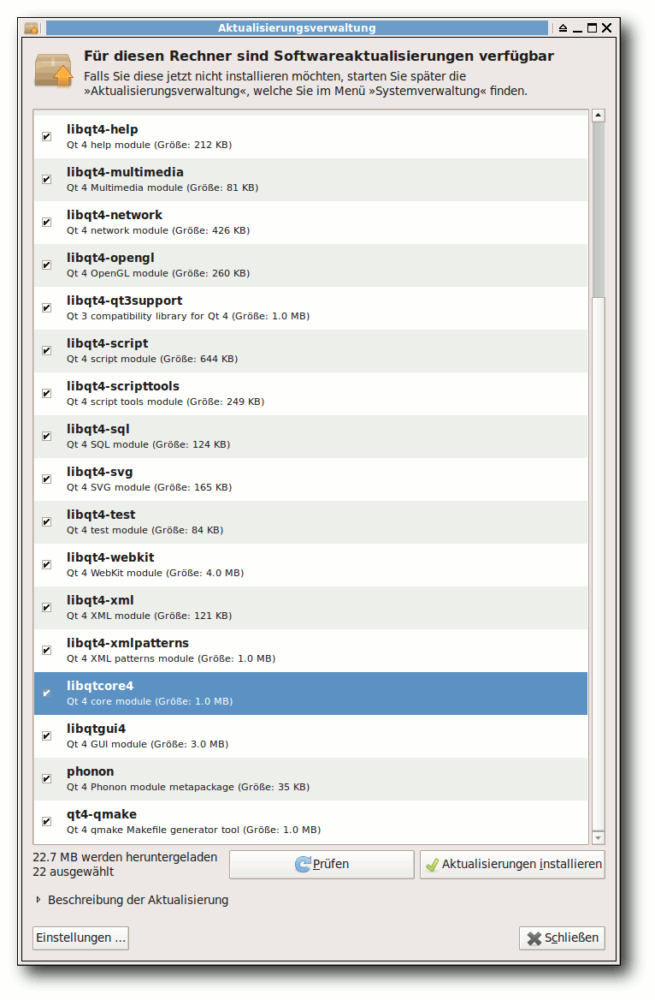
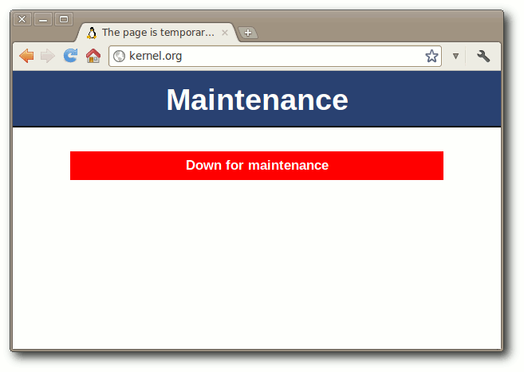
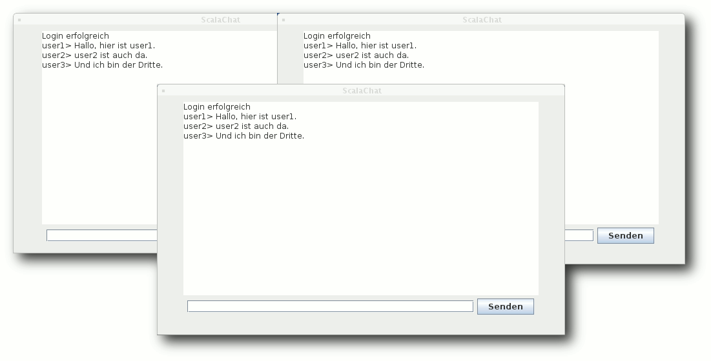
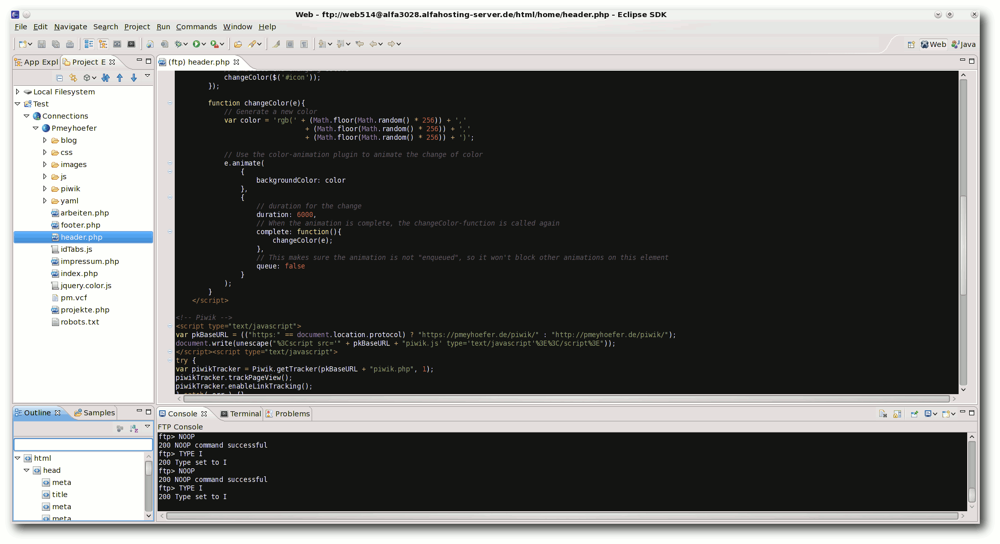
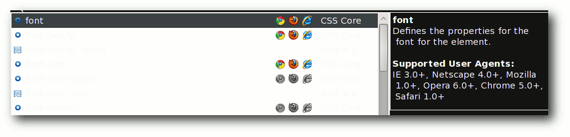
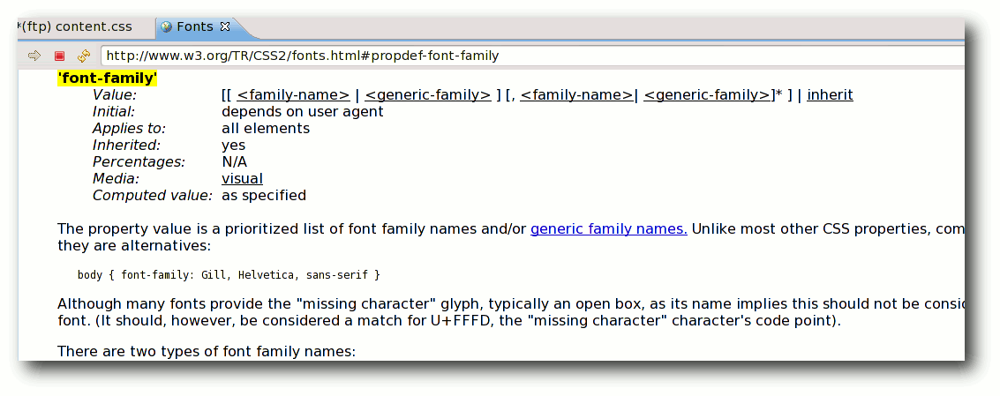

freiesMagazin Oktober 2011 (ISSN 1867-7991)
Topthemen dieser Ausgabe
Python – Teil 9: Ab ins Netz!
Nachdem im letzten Teil dieser Reihe Generator-Funktionen ebenso wie List Comprehensions und Generator Expressions vorgestellt wurden, soll es in diesen Teil wieder etwas praktischer werden. Es werden die urllib-Bibliotheken von Python vorgestellt und ein entsprechendes Beispiel besprochen. (weiterlesen)
Aptana Studio – Eine leistungsfähige Web-Entwicklungsumgebung
Jeder der sich im Laufe der Zeit mit Webentwicklung ernsthafter beschäftigt, kommt einmal an den Punkt, bei dem man sich überlegt professionellere Entwicklungswerkzeuge einzusetzen, die einem die Arbeit erleichtern. Ein sehr mächtiges Programm für die Webentwicklung stellt Aptana Studio bereit, welches zum Teil als echte freie Alternative zu Adobe Dreamweaver gesehen werden kann. (weiterlesen)
Vierter freiesMagazin-Programmierwettbewerb
Am Anfang waren es bunte Glitzersteinchen, danach blecherne Roboter, im dritten Wettbewerb musste man vor Zombies flüchten und diesmal geht es um den schnöden Mammon, den ein schwerreicher Multimillionär unter die Leute bringen will. (weiterlesen)
Zum Index
Inhalt
Linux allgemein
Die Nachteile der Paketabhängigkeiten
Der September im Kernelrückblick
Anleitungen
PHP-Programmierung – Teil 1: HTML
Remote-Actors in Scala
Python – Teil 9: Ab ins Netz!
Software
Aptana Studio – Eine leistungsfähige Web-Entwicklungsumgebung
Community
Rezension: Einführung in die Android-Entwicklung
Rezension: VirtualBox – Installation, Anwendung, Praxis
Magazin
Editorial
Vierter Programmierwettbewerb
Leserbriefe
Veranstaltungen
Vorschau
Konventionen
Impressum
Zum Index
Editorial
Programmierwettbewerb, die Vierte
Nach einem Jahr ist es wieder einmal so weit: Ein neuer freiesMagazin-Programmierwettbewerb startet [1]. Wir haben uns die Kritik des letzten Wettbewerbs zu Herzen genommen und sowohl die Aufgabe als auch die Kommunikation mit dem Server vereinfacht, sodass nun vermutlich jeder Programmierwillige teilnehmen kann. Kurz zusammengefasst geht es darum, über mehrere Runden hinweg mit einem abwechselnden Angebot von Punkten das bestmögliche Ergebnis für sich selbst zu erzielen. Dummerweise hat der Gegner auch immer ein Mitspracherecht, ob die Punkte so aufgeteilt werden, wie man es selbst vorschlägt. Und wenn es schlimm kommt, gehen alle leer aus. Die Umsetzung ist sicherlich einfach, eine gute Taktik zu entwerfen erfordert aber etwas Gehirnschmalz. Wir hoffen, mit der Aufgabe zahlreiche Teilnehmer zu gewinnen. Der Wettbewerb läuft vom 1. Oktober 2011 bis zum 30. November 2011 und zu gewinnen gibt es für die drei besten Teilnehmer wieder Gutscheine von Amazon. Die genauen Details zur Aufgabe und zur Teilnahme kann man im Artikel zum Wettbewerb nachlesen.Mehr als vier Leute bei der Umfrage
Immer mal wieder erreicht uns von unseren Lesern die Bitte, Artikel aus freiesMagazin einzeln abrufbar bereitzustellen. Um das Interesse der Leser besser einschätzen zu können, lief daher eine dreiwöchige Umfrage auf unserer Webseite mit reger Beteiligung [2]. Das Ergebnis ist hierbei recht eindeutig: Fast die Hälfte (47 %, 256 Stimmen) der Leser ist mit der aktuellen Komplettausgabe in HTML- bzw. PDF-Format zufrieden. Dagegen stehen 16 % (88 Stimmen), die sich einzelne PDF-Artikel wünschen. Fast gleichauf mit 15 % (85 Stimmen) sind die Vertreter, die lieber HTML-Einzelartikel haben wollen. Die Gruppe, die beide Angebote zusammen favorisiert, macht noch einmal 10 % (57 Stimmen) aus. Der Ersatz der HTML-Komplettversion durch eines der beiden Angebote konnte aber nur wenige Teilnehmer begeistern (11 %, 63 Stimmen). Die Umfrage sollte uns zunächst einmal zeigen, wie groß das Interesse der Leser an Einzelartikeln ist, denn die Erstellung von Einzelartikeln als PDF- oder als HTML-Version kostet auch einiges an Arbeit, wie sogar ein Leser bemerkte: „Für ein kostenloses Magazin finde ich den Arbeitswand für die Aufbereitung und Bereitstellung von Einzelartikeln zu hoch.“ Zusätzlich ist die eigene Erstellung von separaten PDF-Artikeln unter Linux dank der eingebauten PDF-Druckfunktion bei den meisten PDF-Betrachtern kein Problem und von jedem Interessenten ohne Weiteres selbst durchzuführen. Im Zuge der Umfrage wurde uns auch mitgeteilt, dass die Bezeichnung „Mobilversion“ für die HTML-Ausgabe nicht mehr passend ist, da sich einige Leser darunter eher eine Online-Variante oder ePub-Version vorstellen. Aus dem Grund haben wir die Bezeichnung „Mobilversion“ fallengelassen und werden in Zukunft nur „HTML-Version“ schreiben, sodass jeder weiß, was ihn hinter dem jeweiligen Link erwartet.Aus Drei mach Vier
In der Septemberausgabe von freiesMagazin [3] konnte man bereits lesen, dass wir das Team massiv verstärkt haben. Um diese Massen an Mitarbeitern auch unter Kontrolle halten zu können, musste sich aber auch in der Redaktion etwas verändern. Frank Brungräber, der seit knapp einem Jahr die Redaktion verstärkte, muss etwas kürzer treten und wird fortan „nur“ noch als Korrektor für uns tätig sein. Die entstehenden Lücke wird durch Matthias Sitte gefüllt, der aus den Reihen der Setzer und Layouter ins Redaktionsteam aufgestiegen ist. Damit aber nicht genug, auch ein alter Bekannter schaut wieder vorbei: Dominik Honnef, früher bereits Redakteur bei freiesMagazin, nimmt seinen alten Posten wieder auf, sodass die Redaktion nun mit vier Leuten wie geschmiert arbeiten kann. Wir danken Frank für seine bisherige Unterstützung in der Redaktion und die beiden alteingessenen Redakteure wünschen den beiden „Neuen“ viel Spaß bei ihren neuen Aufgaben.Captcha: Zwei und Zwei ist Vier
Auch freiesMagazin ist nicht vor Spam gefeit. Sie, die Leser, werden davon wenig mitbekommen, da Kommentare von uns moderiert werden, aber uns erreichen dafür umso mehr E-Mails aufgrund von Kommentaren mit zweifelhaften Werbeangeboten. Damit wir nicht einen Großteil unserer Zeit damit verbringen, solche Kommentare zu löschen, blenden wir seit etwa drei Wochen einen einfachen Captcha [4] ein, welcher korrekt beantwortet werden muss, damit uns Ihre Kommentare erreichen. Natürlich denken wir hier an die Barrierefreiheit, weswegen der Captcha aus einer einfachen Rechenaufgabe besteht und nicht etwa aus einem schwer erkennbaren Brei aus Buchstaben, den es abzutippen gäbe. Wir hoffen, dass diese kleine Hürde, Kommentare abzugeben, Ihre Schreibfreude nicht hemmt, sodass uns und vor allem die Autoren auch in Zukunft weiterhin zahlreiche Hinweise und Vorschläge erreichen. Und nun wünschen wir Ihnen viel Spaß mit der neuen Ausgabe. Ihre freiesMagazin-Redaktion Links[1] http://www.freiesmagazin.de/20111001-vierter-freiesmagazin-programmierwettbewerb-gestartet
[2] http://www.freiesmagazin.de/20110828-sollen-artikel-einzeln-abrufbar-sein
[3] http://www.freiesmagazin.de/freiesMagazin-2011-09
[4] https://secure.wikimedia.org/wikipedia/de/wiki/CAPTCHA
Das Editorial kommentieren
Zum Index
Die Nachteile der Paketabhängigkeiten
von Dominik Wagenführ Als einer der großen Vorteile von Linux-Distributionen wird oft die Paketverwaltung genannt. Man muss sich nicht mehr mühsam irgendwelche Software im Netz von Drittanbietern suchen, sondern erhält eigentlich alles, was man braucht, aus einem großen Pakettopf (Repository), dessen Inhalt dazu in der Regel noch getestet ist. Dennoch hat diese Art der Paketverwaltung auch Nachteile.Vor- und Nachteile
Ein Vorteil einer zentralen Paketverwaltung ist die Verfügbarkeit von Software, die man sich nicht selbst aus dem Internet besorgen muss. Ein weiterer Vorteil der Paketverwaltung ist auch, dass sich die installierten Programme darüber aktuell halten lassen. Man muss also nicht mehr manuell wie in anderen Betriebssystemen das Netz nach Updates durchforsten (falls die Software das nicht bereits alleine macht), sondern erhält hier auch alles frei Haus. Schlecht ist es natürlich, wenn man mal Software benötigt, die nicht im Repository vorhanden ist. Sei es, weil man eine neuere Version eines Programmes benötigt (z. B. wegen nerviger Bugs in der im Repository vorhandenen Version) oder ein Programm keinen Paketverwalter (Maintainer) gefunden hat, sodass es gar nicht im Repository zu finden ist. Das eigenständige Bauen der Pakete kann da schon ein Kampf gegen diverse Abhängigkeiten sein. Wieso Abhängigkeiten? Auch das wird oft als Vorteil der Linux-Pakete gepriesen. Ein Paket enthält nur das, was es selbst benötigt, nicht mehr. Wenn man also beispielsweise eine GUI in Qt (einem GUI-Framwork von Nokia/Trolltech) schreibt, muss man nicht Qt selbst mit ausliefern. Da man es aber zur Benutzung der GUI braucht, muss jeder Qt auf seinem Rechner haben. In der Regel funktioniert dieses Modell sehr gut, da die Linux-Distributionen meist Repositorys mit ähnlicher Paketauswahl haben. Was daraus als Vorteil abgeleitet wird: Wenn in einem Paket X ein Fehler auftritt und zwanzig andere Pakete (Paket A bis Paket T) dieses benutzen, muss dennoch nur Paket X aktualisiert werden. Würden die Pakete A bis T den Inhalt von X immer selbst mitliefern, müssten Pakete A bis T ausgebessert und aktualisiert werden.Theorie und Praxis
So weit die Theorie, in der Praxis funktioniert das nämlich aus dem einfachen Grund der Paketabhängigkeiten nicht. Die Pakete A bis T oben hängen nämlich nicht nur von Paket X ab, sondern von Paket X in der Version Y. Wenn der Fehler ausgebessert wird, entsteht ein Paket X in der Version Y', man könnte es auch X' nennen. Die Pakete A bis T hängen nach wie vor vom fehlerhaften Paket X ab. Um denen also klar zu machen, dass sie X' nehmen soll, muss man sie anpassen. Es entstehen neue Pakete A' bis T'. Das Ende vom Lied? Tritt ein Fehler in einem Paket auf, von dessen Version (!) viele andere Pakete abhängig sind, müssen alle diese zusammen aktualisiert werden. Eine Abhängigkeit der Art „größer gleich Version X“ hilft natürlich nicht, weil dann ja auch immer noch Version X als benutzbar gelten würde. Schön zu sehen war dies im Oktober 2010 bei einem Qt4-Fehler [1], der für Abstürze in Webkit-Browsern sorgte. Behoben wurde der Fehler (vermutlich) in dem Paket libqtcore4. Das Paket hatte nur 1 MB und wäre schön leicht herunterzuladen gewesen. Mit der Fehlerbehebung hatte sich die Versionsnummer aber ebenso von 4:4.6.2-0ubuntu5 auf 4:4.6.2-0ubuntu5.1 geändert. Das führte dazu, dass so gut wie alle anderen Qt-Pakete, die von der Core-Bibliothek abhängen (21 Stück an der Zahl), ebenfalls aktualisiert werden mussten. Das resultierte dann im Endeffekt in einem Download von 22,7 MB. Und das nur, weil eine Zeile Code (übertrieben ausgedrückt) in einem Programm angepasst werden musste. Ein geändertes Paket zieht 21 weitere Anpassungen nach sich.
Ähnlich lief es Ende September 2011 nach der Kompromittierung der Server der Zertifizierungsstelle „DigiNotar“ [2]. Im Zuge dessen wurde die Zertifikate in den Anwendungen gelöscht bzw. als nicht vertrauenswürdig eingestuft. Das führte auch dazu, dass, obwohl nur an wenigen Stellen Code angepasst werden musste, viele Pakete aktualisiert wurden, damit diese nicht mehr von der fehlerbehafteten Version abhängen.
Kleine Verbesserungen
Natürlich ist die Downloadgröße in dem Fall ein Problem der Ubuntu-Paketverwaltung. Gäbe es in Ubuntu inkrementelle Updates (es wird aus einem Paket nur neu heruntergeladen, was sich wirklich geändert hat), wäre das Problem nicht so gravierend. Es würde in den abhängigen Paketen einfach nur die Datei ausgetauscht werden, in der steht, dass das Paket X mit der neuen Version Y' benutzt werden sollte. Aber selbst dieses inkrementelle Update beseitigt nicht die Anzahl der anzupassenden Pakete. Der Beitrag soll klarmachen, dass auch Schatten ist, wo es Licht gibt. In der Regel hat eine zentrale Paketverwaltung immense Vorteile. Und wer Erfahrung im Kompilieren hat, hat auch mit der Installation neuerer Software selten ein Problem. Dennoch wandelt sich der Vorteil des Änderns eines Fehlers in einem Paket manchmal auch zum Nachteil. Links[1] https://launchpad.net/bugs/634774
[2] http://www.heise.de/newsticker/meldung/CA-Hack-Noch-mehr-falsche-Zertifikate-1334098.html
| Autoreninformation |
| Dominik Wagenführ (Webseite) genießt die Vorteile einer Paketverwaltung, verflucht sie aber manchmal auch, wenn die Updates wieder so groß sind. |
Zum Index
Der September im Kernelrückblick
von Mathias Menzer Basis aller Distributionen ist der Linux-Kernel, der fortwährend weiterentwickelt wird. Welche Geräte in einem halben Jahr unterstützt werden und welche Funktionen neu hinzukommen, erfährt man, wenn man den aktuellen Entwickler-Kernel im Auge behält.Einbrüche, Umbauten und Abhilfe
Der September 2011 war ein recht düsterer Monat für die Linux-Entwickler – die meiste Zeit stand kernel.org nicht zur Verfügung. Der Grund dafür liegt in dem bereits im August erfolgten Einbruch bei kernel.org (siehe „Der August im Kernelrückblick“, freiesMagazin 09/2011 [1]). Dass Mitte September auch noch ein Einbruch auf linux.com vermeldet werden musste [2], verbesserte die Lage keinesfalls, weder kernel.org noch linux.com standen bei Redaktionsschluss zur Verfügung. Dieser Hinweis ziert kernel.org seit vier Wochen.
Die Betreiber nahmen sich Zeit, um die Infrastruktur, die für die Entwiklung des Linux-Kernels genutzt wird, zu überarbeiten und die Sicherheit der Server mit neuen Konzepten zu verbessern. So verkündete H. Peter Anvin zwischenzeitlich [3], dass Entwickler künftig keinen Shell-Zugang mehr erhalten werden, sondern die Quellen mittels gitolite pflegen. Dieser Dienst soll einen sicheren Betrieb von Git-Repositorien ermöglichen. Anvin wies auf die fehlenden Möglichkeiten für die Nutzung von Server-seitigen Skripten im Zusammenhang mit gitolite hin. Die Kernel-Entwickler werden neue SSH-Schlüssel für den Zugriff auf gitolite erhalten und die ersten Git-Trees sollten laut Anvin in Kürze auf kernel.org zur Verfügung stehen. Weitere Dienste sollen später folgen. Die Entwicklung des Kernels selbst durfte natürlich nicht stillstehen, sodass Torvalds kurzerhand den Entwickler-Zweig auf die Code-Hosting-Plattform github [4] hochlud und dort zur Verfügung stellte [5]. Dies funktionierte gut genug, dass Stimmen laut wurden die forderten, der Linux-Kernel möge weiterhin auf github entwickelt werden [6]. Linux könne von den Werkzeugen, der Web-basierten Oberfläche und der Sicherheit von github profitieren, so die Meinung.
Linux 3.1
Die Ankündigung, dass sich der Quellcode des Kernels nun auf github befinde, ließ Torvalds bei Veröffentlichung der fünften Vorabversion verlauten [7]. Die Zahl der Änderungen hielt sich in einem sehr engen Rahmen, da das Git-Repository von kernel.org die überwiegende Zeit nicht verfügbar war, um Commits der Entwickler entgegenzunehmen. Auch -rc6 [8] wies recht wenige Änderungen auf, in erster Linie Korrekturen an den ARM- und OpenRISC-Architekturen. Und weil ohne kernel.org ein Merge Window keinen Sinn ergeben würde, gab Torvalds dann noch den 3.1-rc7 frei [9]. Darin enthalten waren Korrekturen für verschiedene Probleme, unter anderem für ein Problem in der Dateisystem-Abstraktionsschicht vfs, das im Zusammenhang mit dem Netzwerk-Dateisystem NFS auftrat. Ansonsten enthielt auch diese Vorabversion in das übliche Grundrauschen kleinerer Änderungen, von dem sich der SCSI-Bereich gerade noch mit Korrekturen am qla2xxx-Treiber und einiges Fixes an iSCSI, einer Methode zur Nutzung von SCSI über das Netzwerk, abhob. Wirklich marginal waren die Änderungen bei der achten Vorabversion [10], die ebenfalls mangels der Verfügbarkeit von kernel.org veröffentlicht wurde. Gerade einmal 66 geänderte Dateien beherbergen eine kleinere Aktualisierung an perf, dem Kernel-eigenen Leistungs-Messwerkzeug, sowie eine Überarbeitung der Temperatur-Schnittstelle von hwmon, dem Hardware-Überwachungs-Tool. Torvalds kündigte an, das Merge Window für 3.2 erst nach seinem Urlaub zu öffnen, sodass Linux 3.1 erst Mitte Oktober verfügbar sein dürfte [11]. Sicher ist jetzt schon, dass der Trend der kürzeren Releasezyklen diesmal einen herben Dämpfer erfahren wird. Links[1] http://www.freiesmagazin.de/freiesMagazin-2011-09
[2] http://www.pro-linux.de/news/1/17482/linuxcom-gehackt.html
[3] https://lkml.org/lkml/2011/9/23/357
[4] http://de.wikipedia.org/wiki/GitHub
[5] http://www.pro-linux.de/news/1/17456/kernel-quellen-vorlaeufig-auf-github.html
[6] http://www.internetnews.com/blog/skerner/linux-should-move-to-github-permanently.html
[7] https://lkml.org/lkml/2011/9/4/92
[8] https://lkml.org/lkml/2011/9/14/33
[9] https://lkml.org/lkml/2011/9/21/468
[10] https://lkml.org/lkml/2011/9/27/532
[11] http://www.pro-linux.de/news/1/17530/linux-kernel-31-laesst-auf-sich-warten.html
| Autoreninformation |
| Mathias Menzer (Webseite) hält einen Blick auf die Entwicklung des Linux-Kernels und wartet sehnsüchtig auf die Wiederinbetriebnahme von kernel.org. |
Zum Index
PHP-Programmierung – Teil 1: HTML
von Patrick Eigensatz PHP wird als Programmiersprache zur Generierung dynamischer Websites benutzt. Laut Wikipedia [1] werden rund drei Viertel aller dynamischen Websites durch PHP generiert. Diese Serie soll – vor allem Anfängern in der (Web-)Programmierung – einen Einblick in die Web- und Datenbankprogrammierung mit PHP und MySQL verschaffen. In dieser Reihe wird viel Theorie gelernt. Am besten ist es, wenn man zwischen den einzelnen Kapitel wieder etwas ausprobiert und an einem kleinen Beispiel programmiert, um das Gelernte zu verfestigen. Eventuell gibt es ja auch einen richtigen Anwendungszweck bei den Lesern. Dynamische Websites werden überall dort eingesetzt, wo sich der Seiteninhalt von Aufruf zu Aufruf verändert. Wird man auf einer Seite mit einem „Hallo + Benutzername“ begrüsst, ist das meist schon PHP. Eine andere Möglichkeit zur dynamischen Erstellung von Seiten wäre die Benutzung von lokalen Skriptsprachen, z. B. JavaScript. Deren Benutzung, beispielsweise für Logins, ist aber aus Sicherheitsgründen unbrauchbar. Zur Ausführung von PHP-Skripten wird allerdings ein Webserver mit PHP-Unterstützung verlangt. Heute bieten praktisch alle Webhoster PHP-Unterstützung an. Falls man keine Website hat und auch keine aufschalten möchte, kann man sich einen lokalen Webserver (Apache) aufsetzen.Einrichtung des Webservers
Für die Benutzung des Webservers installiert man die Pakete apache2, libapache2-mod-php5 und php5. Die Webseitendateien werden von Apache in /var/www gesucht, weshalb normalerweise root-Rechte für den Zugriff notwendig sind. Dies kann man umgehen, indem man sich selbst in die Gruppe www-data hinzufügt:# adduser $USER www-dataDanach weist man www-data die entsprechenden Rechte zu:
# find /var/www -type d -exec chmod 770 {} \;
# find /var/www -type f -exec chmod 660 {} \;
Die Konfiguration wird in diesem Artikel nicht näher beschrieben, sie
kann aber im ubuntuusers-Wiki nachgelesen werden [2].
Wer ganz schnell und einfach, ohne große Mühe – und nur zum Testen –
eine Serverinstallation einrichten will, der sollte sich XAMPP
(Apache, MySQL, PHP, Perl) ansehen [3].
Auch für Leser, die Windows benutzen, ist dies eine Möglichkeit.
Diese Installation sollte aber auf keinen Fall für richtige,
produktive Zwecke eingesetzt werden, da Updates nicht
automatisch eingespielt werden und die Konfiguration nicht unbedingt die sicherste ist.
Installiert wird XAMPP laut der deutschen
Anleitung in /opt/lampp (bzw. C:\xampp). Falls es unter Linux Probleme
mit dem Zugriff gibt, müssen dem Verzeichnis /opt/lampp/htdocs, in dem
die Webseiten abgelegt werden, mit dem chown-Befehl die Rechte gewährt werden:
# chown $USER /opt/lampp/htdocsDanach kann die ganze XAMPP-Konfiguration mit dem Befehl
# /opt/lampp/lampp startbzw. (in Windows) über das Controlpanel, das mitinstalliert wurde, gestartet werden. Mehr Informationen zu XAMPP und zur Installation findet man im ubuntuusers-Wiki [4]. Laufen die Server, so sollte man über http://127.0.0.1/ bzw. http://localhost/ seine Seiten sehen können. Bei XAMPP kommt hier die Übersicht. Es empfielt sich
# /opt/lampp/lampp securityauszuführen. Damit wird überprüft, ob die Standardpasswörter bereits ersetzt wurden. Wenn nicht, kann man dort direkt seine Passwörter eingeben. In Windows erreicht man dies unter dem Menüpunkt „Security“. Wird in der URL oben nur ein Ordner angegeben, so wird standardmässig die Datei index.html oder index.php in diesem Ordner geöffnet. Ist keine solche Datei vorhanden, wird in der Regel das Verzeichnis aufgelistet, was manchmal unerwünscht ist, oder der Browser wird mit einem 403 – Access forbidden zurückgewiesen.
Die HTML-Grundlagen
Eine einfache HTML-Seite
Um eine dynamische Webseite erstellen zu können, muss man zuerst wissen, wie man eine statische Website erstellt. Leser, die bereits HTML-Kenntnisse haben, können dieses Tutorial überspringen und sich auf nächsten Monat freuen. HTML-Dateien sind nicht binär und können daher mit einem ganz normalen Texteditor bearbeitet werden. Gedit (Standard-Editor unter GNOME) und Kate (Standard-Editor unter KDE) bringen auch eine schöne Syntaxvorhebung mit. Es gibt aber sehr viele Editoren – sogenannte IDEs (Integrated Development Enviroments) – die sich auch auf die dynamische Webseitenprogrammierung spezialisiert haben und daher später nützlich sein könnten. HTML ist case-insensitive, beachtet also die Groß-/Kleinschreibung nicht. Jede HTML-Seite beginnt mit einem einfachen <html> und endet mit einem </html>. Fast alle sogenannte „Tags“ haben in HTML einen Anfang (<…>) und ein Ende (</…>). Solche Tags muss man sich als eine Art „Container“ vorstellen, in der wiederum neue „Container“ und Inhalte sein können. Eine Seite mit dem InhaltHallo Weltsieht wie folgt aus:
<html> <body> Hallo<br> Welt </body> </html>Der <body>-Tag wird benötigt, um dem Browser zu zeigen, wo sich der eigentliche, sichtbare Inhalt der Seite befindet. Auch er wird mit einem </body> geschlossen. <br> steht für das englische „break“ und bewirkt einen Zeilenumbruch.
Textformatierungen in HTML
Die Einrückungen dienen nur der Lesbarkeit. Man könnte auch alles auf eine Zeile pressen.<html> <head> <title>Dies ist ein Beispiel</title> </head> <body> <b> <font color="FF0000"> Ein roter, fetter Text </font> </b> <br> <font color="blue"> <i> Ein blauer, kursiver Text </i> </font> </body> </html>Listing: Beispiel.html Hier wird zusätzlich der <head>-Tag eingeführt in dem sich der Seitentitel zwischen <title> und </title> befindet. <head> sollte nicht mit dem Protokollheader verwechselt werden, den man später antreffen wird. Wer mit einer englischen Version eines Office-Paketes arbeitet, dem sind die Begriffe „bold“ für fett, „italic“ für kursiv und „underlined“ für unterstrichen sicher bekannt. Alles zwischen <b> und </b> wird also fett dargestellt. <font color="FF0000"> bewirkt eine rote Einfärbung des Textes. FF0000 ist der hexadezimale Farbcode für rot. Keinesfalls muss man überall hexadezimale Codes verwenden, man kann auch einfach red schreiben. Eine Liste mit vielen Farbcodes findet man auf der Webseite farbtabelle.at [5]. Bestimmte Tags haben verschiedene Parameter, die man übergeben kann. Zu fast jedem Parameter gibt es auch Argumente. Argumente werden hinter dem Parameternamen und einem Gleichheitszeichen und zwischen doppelten Anführungszeichen übergeben.
< Start font Tagname color Parameter = Zuweisung "FF0000" Argument > Ende
Tabellen
Tabellen werden fast überall in der Webentwicklung gebraucht, wo etwas schön strukturiert aussehen soll. Tabellen werden mit <table> eingeleitet und hören mit </table> auf. Zelleninhalte werden zwischen Zellen (<td>…</td>) eingetragen. Diese wiederum werden zwischen einzelne Zeilen (<tr>…</tr>) gesetzt. Das mag sich kompliziert anhören, ist aber in der Praxis leicht. Hier eine einfache Tabelle:1a 1b 1c 2a 2b 2cund der HTML-Quellcode:
<html> <body> <table> <tr> <td>1a</td> <td>1b</td> <td>1c</td> </tr> <tr> <td>2a</td> <td>2b</td> <td>2c</td> </tr> </table> </body> </html>Listing: Tabelle.html Natürlich kann man seinen Text innerhalb von <td> und </td> auch noch formatieren.
<html> <body> <form action="nameausgeben.php" method="GET"> <input type="text" name="angegebenername"> <input type="submit" value="Absenden"> </form> </body> </html>Listing: Formular.html
Formulare
Formulare stellen einen sehr wichtigen Teil der dynamischen Webseitenentwicklung dar, da man über solche Daten erfassen kann. Der Tag, um ein Formular zu erstellen, lautet <form>. Er benötigt zwei Parameter, um zu wissen, was es mit den eingegebenen Daten machen soll. Jedes Eingabefeld, besser gesagt, jede Eingabemöglichkeit wird durch den <input>-Tag repräsentiert. Auch <input> benötigt Parameter, z. B. um zu wissen, ob es sich um ein Textfeld, eine Auswahlbox oder einen Button handelt. Das action-Argument des <form>-Tags liefert einen Verweis zu einem (meist) serverseitigen Programm, an das die Daten gesendet werden. method ist die Art, wie sie versendet werden. Der Input-Tag vom Typ text ist ein einfaches Eingabefeld. Es hat den Namen angegebenername. Mit PHP kann man später auf diesen Wert über eine Variable zugreifen. Deshalb sollte jedes Input-Feld einen eigenen Namen haben. Mit submit wird ein Absendebutton erstellt, der das Formular und die Daten an das Programm sendet. value bezeichnet den Text, der auf dem Button steht. Wer das Formular sendet, gelangt zu einem „404 Error“, da das Programm nameausgeben.php noch fehlt.Ausblick
Nun könnte man ein Formular erstellen, das Formular in eine Tabelle packen und formatierten Text dazu schreiben. Auf SelfHTML [6] findet man eine Komplettreferenz aller HTML-Tags. Links[1] http://de.wikipedia.org/wiki/PHP
[2] http://wiki.ubuntuusers.de/Apache
[3] http://www.apachefriends.org/de/xampp-linux.html
[4] http://wiki.ubuntuusers.de/XAMPP
[5] http://www.farbtabelle.at/
[6] http://de.selfhtml.org/html/
| Autoreninformation |
| Patrick Eigensatz (Webseite) befasst sich seit einigen Jahren mit der Entwicklung von Webanwendungen und hat dadurch viele Erfahrungen im Bereich PHP gesammelt. |
Zum Index
Remote-Actors in Scala
von Stefan Bradl Im letzten Artikel „Parallelisierung mit Scala“ (siehe freiesMagazin 05/2011 [1]) ging es um die Nutzung des Actor-Modells zur Parallelisierung. Dadurch konnten Programme – im Vergleich zu herkömmlicher nebenläufiger Programmierung – einfacher implementiert werden. Ein nächster Schritt besteht nun darin, das Actor-Modell nicht nur dazu zu nutzen, mehrere Prozessorkerne auf einem Rechner besser auszulasten, sondern auch um über Rechnergrenzen hinweg zu kommunizieren.Wieso keine Sockets?
Warum benötigt man nun Remote-Actors, wenn auch einfache Sockets [2] genutzt werden könnten? Dazu muss man sich vorstellen, wie ein Server mehrere Clients behandeln kann. Im einfachsten Fall wird für jeden einzelnen Client ein Thread erstellt. Soll über den Server eine Kommunikation zwischen den Clients stattfinden, so muss an dieser Stelle einiger Aufwand betrieben werden, um alle Threads zu synchronisieren. Außerdem ist die Erstellung eines Threads pro Client nicht gerade performant, da es zu häufigen Threadwechseln innerhalb des Betriebssystems kommen kann. Des Weiteren können über Sockets selten direkt Strings versendet und empfangen werden. Diese müssen zuerst in Byte-Arrays umgewandelt werden. Vor allem beim Empfangen von Daten tritt das Problem auf, dass Daten in mehreren kleinen „Häppchen“ eintreffen können. Für die eben aufgeführten Punkte bieten die im Folgenden beschriebenen Remote-Actors eine große Hilfestellung.Was sind Remote-Actors?
Remote-Actors sind eine einfache Erweiterung des normalen Actor-Modells. Durch diese Erweiterung ist es möglich, Actors auf verschiedenen Rechnern miteinander Nachrichten austauschen zu lassen. Das Senden und Empfangen von Daten geschieht auf einer sehr viel höheren Abstraktionsstufe als es bei der Socket-Programmierung der Fall ist und auch die Verwaltung mehrerer Clients wird auf ein Minimum an Programmieraufwand reduziert. Aus einem normalen Actor kann auf sehr einfache Weise ein Remote-Actor erzeugt werden. In Scala sehen Grundgerüste für die beiden Actors wie folgt aus:
class MyServer extends Actor {
alive(2345)
register('myServer, this)
start
def act {
}
}
class MyClient extends Actor {
alive(1234)
register('myClient, this)
start
private var serverNode = select(Node("127.0.0.1", 2345, 'myServer))
def act {
}
}
Listing: myServer.scala
Es werden die zwei Funktionen alive (Zeilen 2 und 11) und
register (Zeile 3 und 12) benötigt. Die erste der beiden
Funktionen ermöglicht es, den Actor über einen als Parameter
angegebenen TCP-Port zu erreichen. Mit der zweiten Methode wird es
möglich, einem Actor einen Namen zuzuweisen, unter dem er
angesprochen werden kann.
Um von einem anderen Rechner auf den registrierten Actor
zuzugreifen, wird die Funktion select (Zeile 15) genutzt. Diese
Funktion liefert eine Referenz auf den entfernten Actor zurück.
Ein einfaches Chat-Programm
Als Beispiel für diesen Artikel wird ein Chat-Programm entwickelt. Dieses soll aus einem konsolenbasierten Server und einem oder mehreren Clients mit einer grafischen Benutzeroberfläche bestehen. Die Benutzeroberfläche soll lediglich ein Nachrichtenfenster, ein Eingabefeld und einen „Senden“-Knopf enthalten. Als erstes muss sich ein Client mit dem Server verbinden. Sendet einer der Clients nun eine Nachricht an den Server, so wird diese automatisch an alle verbundenen Clients weitergeleitet. Dank der Möglichkeit mit wenig Quelltext sehr viel auszudrücken, benötigen Client und Server zusammen nicht einmal 150 Zeilen. Um den Quelltext übersichtlicher zu gestalten, wird eine feste IP für alle Clients und den Server verwendet. Dabei handelt es sich um die 127.0.0.1, also localhost. Zum Testen und Ausprobieren reicht das aus. Der Server ist außerdem so eingestellt, dass er auf Port 1234 läuft. Um mehrere Clients lokal testen zu können, kann der Port, auf welchem die Clients Nachrichten empfangen, als Kommandozeilenparameter mitgegeben werden. Drei Chat-Clients unterhalten sich.
Der Server
Der Server behandelt in seiner act-Methode einkommende Nachrichten. Diese können entweder Log-ins oder normale Chatmitteilungen sein. Um diese zu unterscheiden, werden zwei einfache reguläre Ausdrücke verwendet. Dank der Funktion r können diese einfach aus einem String-Literal erstellt werden:val loginMessage = """LOGIN:(\w+):(\d+)""".r val incomingMessage = """SEND:(\w+):([\w\s,.]+)""".rBeim Eintreffen einer Log-in-Nachricht wird der Client-Actor in einer Liste gespeichert. Dank dieser Liste können Nachrichten später an alle Clients verteilt werden. Die Funktion für die Reaktion auf einen Login ist wie folgt definiert:
def registerClient(username: String, port: Int) {
println("%s logged in".format(username))
val client = select(Node("127.0.0.1", port), 'chatClient)
clients = client :: clients
client ! "SERVER:LOGIN_SUCCEEDED"
}
Mit der Funktion select in Zeile drei wird der Remote-Actor des
Clients ausgewählt. Auf welchem Port dieser läuft, sendet der
Client mit. Der zurückgegebene Actor wird dann in der
bereits angesprochenen Liste gespeichert (Zeile 4). Anschließend
wird dem Client in Zeile fünf noch eine Erfolgsnachricht gesendet.
Dazu wird die aus dem letzten Artikel bekannte Methode !
genutzt.
Als nächstes folgt die Funktion zum Verteilen einer Nachricht:
def sendToAllClients(from: String, msg: String) = clients foreach {
_ ! "%s> %s".format(from, msg) }
Um den Code kurz zu halten wird der Platzhalter _ verwendet.
Dieser steht für das aktuelle Element der Liste von Clients, über
die gerade mittels foreach iteriert wird. Innerhalb von foreach
wird dann die entsprechende Nachricht an den aktuellen Client
gesendet.
Der Client
Der Client besteht, wie der Server auch, aus einer einzigen Klasse. Diese erbt sowohl von Actor als auch von SimpleSwingApplication. Dadurch können sehr schnell einfache Benutzeroberflächen erstellt werden. Auch der Client verwendet einfache reguläre Ausdrücke zur Identifikation der Nachrichten:val loginMessage = """OUT:LOGIN:(\w+)""".r val loginSucceeded = "SERVER:LOGIN_SUCCEEDED".r val sendMessage = """OUT:([\w\s,.]+)""".rInteressant ist an dieser Stelle, dass die ausgehenden Nachrichten ebenfalls an den Client-Actor gesendet werden. Dazu werden sie mit dem Präfix OUT: versehen. Dies geschieht in der Methode, welche beim Klicken auf den „Senden“-Button ausgeführt wird:
case ButtonClicked(`sendButton`) => inputField.text.trim match {
case "" =>
case msg => {
ChatClient ! "OUT:" + msg
this.inputField.text = ""
}
this.inputField.text = ""
}
Durch die regulären Ausdrücke wird einfach zwischen eingehender und
ausgehender Nachricht unterschieden. Die Behandlung einer
Log-in-Nachricht ist ähnlich wie im Server implementiert:
case loginMessage(username) => {
this.username = username
server = select(Node("127.0.0.1", 1234), 'chatServer)
server ! "LOGIN:%s:%d".format(username, port)
}
Bekommt der Client die Erfolgsmeldung vom Server, so wird im
Textfeld eine entsprechende Nachricht angezeigt:
messageArea.append("Login erfolgreich\n")
Der gesamte Quelltext mit einer kleinen Anleitung zur Kompilation
und Ausführung kann bei GitHub [3]
gefunden werden.
Fazit
Der traditionelle Weg, mittels Socket-Programmierung verteilte Systeme zu programmieren, ist sehr aufwändig und fehleranfällig. Auf einer niedrigen Abstraktionsebene müssen Daten versendet und empfangen werden. Handelt es sich um eine Client-Server-Anwendung mit mehreren Clients, so müssen diese auf der Serverseite verwaltet werden. Viele dieser Arbeiten entfallen bei der Verwendung von Remote-Actors. Das Verfahren bietet eine hohe Abstraktion und vorhandene Actors können sehr einfach in Remote-Actors umgewandelt werden. Der Beispielcode für das Chat-Programm beweist eindrucksvoll die Mächtigkeit der Sprache Scala und die Verbindung mit Remote-Actors. Links[1] http://www.freiesmagazin.de/freiesMagazin-2011-05
[2] https://secure.wikimedia.org/wikipedia/de/wiki/Socket_%28Software%29
[3] https://github.com/madrenegade/ScalaChat
| Autoreninformation |
| Stefan Bradl ist Informatikstudent an der Hochschule Zittau/Görlitz. Während seines Praktikums hat er sich mit der Programmiersprache Scala vertraut gemacht und seine Bachelorarbeit zum Thema „Parallelisierung funktionaler Programme“ geschrieben. |
Zum Index
Python – Teil 9: Ab ins Netz!
von Daniel Nögel Nachdem im letzten Teil dieser Reihe Generator-Funktionen ebenso wie List Comprehensions und Generator Expressions vorgestellt wurden (siehe freiesMagazin 07/2011 [1]), soll es in diesen Teil wieder etwas praktischer werden. Es werden die urllib-Bibliotheken von Python vorgestellt und ein entsprechendes Beispiel besprochen.Besprechung der Übungen
Bevor das neue Thema aufgegriffen wird, sollen kurz mögliche Lösungen der Übungsaufgaben des vorherigen Teils vorgestellt werden. Zunächst sollte eine Generator-Funktion geschrieben werden, die über jedes Zeichen einer gegebenen Datei iteriert. Eine solche Funktion könnte wie folgt implementiert werden:import codecs def iter_chars(path): with codecs.open(path, encoding="utf-8", mode="r") as handle: for line in handle for char in line: yield charDas Einlesen einer Datei mit dem Context-Handler with wurde bereits in Teil 6 dieser Reihe vorgestellt (siehe freiesMagazin 03/2011 [2]). Die geöffnete Datei wird dabei an den Namen handle gebunden. Beim Iterieren über das Datei-Objekt (Zeile 3) wird der Inhalt der Datei zeilenweise zurückgegeben und an den Namen line gebunden. Beim Iterieren über die Zeichenkette line werden wiederum die einzelnen Zeichen abgearbeitet und an den Namen char gebunden. Es fehlt nur noch das Schlüsselwort yield, um die gewünschte Generator-Funktion zu vervollständigen. Die Funktion könnte nun wie folgt aufgerufen werden:
for char in iter_chars(DATEINAME): print charEine Besonderheit ist die Funktion open() aus dem codecs-Modul. Es erlaubt das Einlesen einer Datei mit einer bestimmten Kodierung. So werden Fehler verhindert, andernfalls würden etwa in diesem Beispiel Umlaute in UTF-8-kodierten Dateien als zwei Zeichen gezählt werden [3]. Als zweite Übung war eine List Comprehension (LC) gefordert, die für die Zahlen von 1 bis 100 Tupel der jeweiligen Zahlen und ihrer Quadratwurzel in einer Liste ablegt. Hilfreich dazu ist das Modul math, mit dessen Funktion sqrt() sich Quadratwurzeln von Zahlen berechnen lassen:
>>> import math >>> [(number,math.sqrt(number)) for number in xrange(1,101)]Dieses Beispiel sollte nach der Lektüre von Teil 8 dieser Reihe (siehe freiesMagazin 07/2011 [1]), ohne größere Probleme verständlich sein. Ein wenig anspruchsvoller ist da schon die Ergänzungsaufgabe, in diese Liste nur jene Zahlen aufzunehmen, deren Quadratwurzel natürlich ist. Letztlich ist dafür aber lediglich eine kleine Ergänzung der LC erforderlich:
>>> [(number,math.sqrt(number)) for number in xrange(1,101) if math.sqrt(number).is_integer()] [(1, 1.0), (4, 2.0), (9, 3.0), (16, 4.0), (25, 5.0), (36, 6.0), (49, 7.0), (64, 8.0), (81, 9.0), (100, 10.0)]Die Methode is_integer() gibt dabei jeweils „wahr“ zurück, wenn eine gegebene Fließkommazahl (etwa 3.0) eine Ganzzahl ist. Nur diese Zahlen werden so in die Liste aufgenommen. Alternativ könnte hier auch der Modulo-Operator % eingesetzt werden, um Zahlen auf ihre Ganzzahligkeit zu testen. Statt xrange ließe sich grundsätzlich auch range verwenden. Zwar legt range dazu erst eine komplette Liste der Zahlen von 1 bis 100 im Speicher ab, dieser Nachteil kommt aber erst bei großen Listen zum Tragen [4].
Die Tore der Welt
Bei urllib [5] und urllib2 [6] handelt es sich gewissermaßen um Tore zum „World Wide Web“. Mit urllib lassen sich beispielsweise bequem Dateien aus dem Internet lokal speichern oder Webseiten auslesen. Die genaue Verteilung der Funktionalität über die beiden Module ist bisweilen etwas irritierend – hier hilft es am ehesten, sich anhand der Beispiele zu orientieren. In Python3 wurde diesbezüglich etwas aufgeräumt. Um beispielsweise die Bing-Ergebnisseite für einen beliebigen Suchbegriff auszulesen, ließe sich folgender Code verwenden:
import urllib
import urllib2
url = "http://bing.com/search"
params = urllib.urlencode({"q":"test"})
handle = urllib2.urlopen("{0}?{1}".format(url, params))
print handle.read()
Es werden zunächst urllib und urllib2 importiert und schließlich
die auszulesende URL an den Namen url gebunden. Die Funktion
urllib.urlencode erstellt aus einem Dict von Schlüsseln und
Werten eine Zeichenkette mit dem Format
Schlüssel1=Wert1&Schlüssel2=Wert2. Dabei werden unter anderem Leerzeichen
und Umlaute prozentkodiert [7].
In Zeile 5 wird die URL geöffnet und ein sogenanntes
„file-like object“ an den Namen handle gebunden. „file-like“
bedeutet in diesem Kontext, dass die Netzwerkobjekte sich ähnlich
verhalten wie gewöhnliche Dateien. So unterstützen sie
beispielsweise die Methoden read(), readlines() oder info().
Auch kann über sie iteriert werden.
Im obigen Beispiel wird das gesamte Objekt (sprich die
Bing-Ergebnisseite) in einem Rutsch ausgelesen und mittels
print auf der Standardausgabe ausgegeben. Ebenso könnte der
Inhalt an einen Namen gebunden werden und etwa mit einem
HTML-Parser weiterverarbeitet werden – wenngleich für derartige
Anwendungen natürlich immer eine Lösung via API vorzuziehen ist.
Anbieter wie Google oder Wikipedia unterbinden derartige
automatisierte Suchen sogar.
Wer dennoch Seiten mit urllib auslesen möchte, sollte unbedingt
daran denken, die erhaltenen Zeichenketten korrekt zu dekodieren.
Abhängig von der Kodierung der jeweiligen Seite, kann es sonst zu
Darstellungsfehlern kommen.
Mit folgendem, sehr einfachen Beispiel könnte aber beispielsweise die
externe IP-Adresse des Rechners ermittelt werden:
import re
import urllib2
url = "http://checkip.dyndns.com/"
handle = urllib2.urlopen(url)
content = handle.read()
result = re.search("[0-9]+\.[0-9]+\.[0-9]+\.[0-9]+", content)
if result:
print result.group(0)
else:
print "Keine IP gefunden"
In Zeile 1 wird das Modul re importiert, mit dem sich reguläre
Ausdrücke in Python erzeugen lassen. Danach wird auch hier eine URL
geöffnet, ausgelesen und der Inhalt an content gebunden. Der
reguläre Ausdruck in Zeile 7 definiert vereinfacht gesagt das
„Aussehen“ einer IP-Adresse. Mit der Funktion search wird
content nach Vorkommen dieser Zeichenkette durchsucht. Die
Treffer werden als SRE_Match-Objekt an result gebunden. Wenn es
Treffer gab (Zeile 8), wird die erste gefundene IP-Adresse auf der
Standardausgabe ausgegeben (Zeile 9).
Hinweis: In Python3 wurde die Funktionalität der Bibliotheken urllib
und urllib2 auf die Module urllib.request, urllib.parse und
urllib.error verteilt. Genauere Informationen zu den Änderungen
finden sich im Netz [8].
Ins Netz damit!
Natürlich lassen sich mit Hilfe der urllib-Bibliotheken nicht nur Internetseiten auslesen, sondern auch Dateien zu Servern übertragen. Im Folgenden soll ein nicht sehr umfangreiches Skript vorgestellt werden. Es lädt eine Datei bei einem sogenannten „One-Click-Hoster“ hoch – in diesem Fall zu der Plattform der „PirateBay“-Macher bayfiles.com. Diese Seite bietet eine recht einfache Schnittstelle [9], über die Dateien hochgeladen und gelöscht werden können. Zunächst soll nur etwas hochgeladen werden. Ein Blick in die Dokumentation offenbart, welches Verhalten die Schnittstelle erwartet:- Es erfolgt eine GET-Anfrage an http://api.bayfiles.com/v1/file/uploadUrl Diese liefert zwei temporär gültige URLs zurück. Eine URL für den Upload und eine URL für den Fortschritt des Uploads.
- Danach folgt der HTTP-POST an die so erhaltene Upload-URL. Dabei wird die zu übertragende Datei mit dem Feld file übergeben.
- Nach erfolgreichem Upload liefert die Upload-URL verschiedene Informationen über die Datei zurück. So erhält man Download-URL, sha1-Prüfsumme und den Lösch-Link.
- Alle Antworten des Servers werden im sogenannten „JSON-Format“ [10] geliefert. Dieses Format erlaubt es, Datenstrukturen über das Netz zu übertragen, so dass die Rückgaben des Servers schnell in eine Python-Datenstruktur umgewandelt werden können.
# easy_install poster>=0.8.1Um das JSON-Format verarbeiten zu können, wird das Modul simplejson eingesetzt. Dieses findet sich in allen gängigen Linux-Distributionen und kann beispielsweise unter Ubuntu über das Paket python-simplejson nachinstalliert werden. Der Übersicht halber wird das fertige Skript hier nicht abgedruckt, sondern nur zum Download angeboten: beam2bay_simple.py.
Analyse des Upload-Skriptes
Was passiert genau in dem Skript?import os import sys import poster import urllib import urllib2 import simplejsonZunächst werden die erforderlichen Importe durchgeführt. Die Module os und sys sind bereits hinreichend bekannt, die Module urllib und urllib2 wurden ebenfalls oben vorgestellt. Das neue Modul simplejson wird sich darum kümmern, die Antworten des Servers in Python-Datenstrukturen zu übersetzen. Der Befehl
poster.streaminghttp.register_openers()meldet die Zusatzfunktionalität des poster-Moduls bei urllib2 an, sodass dieses wie gewohnt verwendet werden kann. Die zentrale Funktion des Skriptes ist die Funktion upload_file(). Sie erwartet einen Parameter path, also den Pfad der hochzuladenden Datei. In Zeile 40 ruft sie zunächst die Funktion get_upload_url() auf. Diese führt Schritt eins von oben aus und stellt eine GET-Anfrage an den Server. Das Vorgehen ist dabei bereits bekannt. Neu ist lediglich die Tatsache, dass die Antwort des Servers durch das Modul simplejson weiterverarbeitet wird:
info = simplejson.loads(content) if info["error"] == u"": return info["uploadUrl"], info["progressUrl"] else: raise BeamException(info["error"])Der Inhalt (content) wird zunächst an die Funktion loads des Moduls simplejson übergeben. Antwortet der Server also mit einer Zeichenkette wie (gekürzt):
{"error":"","uploadUrl":"http:\/\/s6.baycdn.com\/upload\/4013ab9a\/4e7360f8\/6\/0?X-Progress-ID=...","progressUrl":"http:\/\/s6.baycdn.com\/progress\/?X-Progress-ID=..."}
macht simplejson daraus ein Python-Dict:
{
"error":"",
"uploadUrl":"http://s6.baycdn.com/upload/4013ab9a/4e7360f8/6/0?X-Progress-ID=...",
"progressUrl":"http://s6.baycdn.com/progress/?X-Progress-ID=..."
}
Das ist unglaublich bequem, da die Antwort des Servers nicht mehr
umständlich geparst und ausgewertet werden muss. Sie wird direkt in
eine verwendbare Datenstruktur umgewandelt und an den Namen info
gebunden (Zeile 32).
Wenn der Eintrag error des Dicts nur eine leere Zeichenkette
enthält, wurde der Vorgang laut BayFiles-Dokumentation erfolgreich
abgeschlossen und die Felder uploadUrl und progressUrl
enthalten gültige URLs. Diese werden als Rückgabewert der Funktion
get_upload_url() zurückgegeben (Zeile 34). Ist info["error"]
nicht leer, ist ein Fehler aufgetreten. In Zeile 36 wird
entsprechend eine Exception ausgelöst.
In Zeile 40 werden die Rückgabewerte der Funktion get_upload_url()
an die Namen upload_url und progress_url gebunden. Von
Interesse ist hier aber nur die erste URL. Diese wird in Zeile 42 an
die Funktion poster.encode.multipart_encode() übergeben.
Diese erwartet als ersten Parameter ein Dict, das die Namen der
gewünschten Felder als Schlüssel und die dazugehörigen Daten als
Werte angibt. In diesem Fall ist es also das Dict "file":
open(path). Als weiterer Parameter wird hier cb=show_progress
übergeben. Dabei handelt es sich um eine sogenannte
Callback-Funktion. Während des Uploads wird diese Funktion in
regelmäßigen Abständen aufgerufen, so dass man den aktuellen
Fortschritt ausgeben kann. Die Funktion multipart_encode()
erstellt nun ein HTTP-POST-Request mit der gewünschten
multipart-Kodierung. Es gibt einen Generator und eine
Zeichenkette zurück, die an die Namen datagen und headers
gebunden werden.
Bei headers handelt es sich schlicht um den Kopf der
HTTP-POST-Anfrage. datagen ist ein Generator, der nach und nach
die zu übertragende Datei ausliest. In Zeile 44 werden
upload_url, datagen und headers an ein
urllib2.Request-Objekt [12]
übergeben. Dieses Objekt wird an den Namen request gebunden und in
Zeile 45 statt einer URL an die Funktion urllib2.urlopen
übergeben.
Das mutet zunächst merkwürdig an: Warum wird die Seite nicht direkt
über urllib2.urlopen() ausgelesen wie in den Beispielen zuvor?
Dies hängt damit zusammen, dass urlopen() letztlich nur zwei
Methoden kennt: GET und POST in der Kodierung
application/x-www-form-urlencoded. Dies genügt für viele Fälle.
Möchte man darüber hinaus aber auf den HTTP-Header zugreifen, wird
zunächst ein Request-Objekt erstellt, das tiefgreifendere
Manipulationen zulässt.
Die eigentliche Kommunikation findet aber so oder so über die
Funktion urlopen statt. Diese verarbeitet sowohl URLs als auch
Request-Objekte. Sie öffnet also eine Verbindung zu dem externen
Server, überträgt die Daten und macht die Antwort des Servers als
„file-like-object“ zugänglich, das an den Namen response gebunden
wird. Der Inhalt der Antwort wird in Zeile 47 mit der Methode
read() ausgelesen und an den Namen info gebunden.
Hier wiederholt sich das JSON-Spiel: Die Antwort wird durch
simplejson.loads() in ein Python-Dict umgewandelt. Ist
info["error"] leer (also == ), gab es keine Fehler. In diesem
Fall enthält das Dict info (wie der Dokumentation zu entnehmen
ist) allerlei Informatioenen, die ab Zeile 53 in einer sehr
einfachen Tabelle ausgegeben werden.
Ist error != , trat ein Fehler auf. In dem Fall wird wiederum
eine Exception ausgelöst.
Bleibt nur noch die Funktion show_progress. Diese Funktion wird
während der Übertragung der Daten an den Server immer wieder
ausgelöst, i. d. R. nach 4096 übertragenen Byte. Ihr werden dabei
zwei Werte übergeben: einmal die bereits übertragenen Daten
(current) und die Gesamtgröße der zu übertragenden Daten
(total). Aus diesen lässt sich leicht der Fortschritt in Prozent
ermitteln.
Eine kleine Besonderheit ist die Ausgabe über sys.stdout.write().
Damit wird ebenso wie mit print auf die Standardausgabe
geschrieben, allerdings ist etwas mehr Kontrolle über die
Ausgabe möglich. Der Fortschrittsangabe ist die Zeichenkette \r
(Wagenrücklauf) angehängt. Dies setzt den Cursor wieder auf den Anfang
der Zeile, sodass die nächste Ausgabe die vorherige Ausgabe
überschreibt. Durch sys.stdout.flush() wird der interne Buffer
der Standardausgabe geleert, sprich auf den Bildschirm gebracht.
Bleibt zuletzt noch der Block if __name__ == "__main__":. Er ist
bereits aus vorherigen Beispielen bekannt. Der Rumpf wird
ausgeführt, wenn das Skript als eigenständiges Programm gestartet
und nicht als Modul importiert wird. Hier wird nur überprüft, ob
ein zusätzlicher Parameter übergeben wurde und ob es sich dabei um
eine gültige Datei handelt. Ist dies der Fall, wird der
entsprechende Pfad an die Funktion upload_file() übergeben,
andernfalls wird eine Fehlermeldung ausgegeben.
Gedanken zur weiteren Entwicklung
Eine anständige Parameterbehandlung wäre wünschenswert, wobei das Modul argparse [13] helfen kann. Aber auch getrennte Benutzerkonten für den Upload könnten unterstützt werden. Eine erweiterte Version dieses Skriptes wurde bei Launchpad [14] abgelegt. Mit urllib, urllib2 und simplejson wurden in diesem Artikel einige Module vorgestellt, die für viele Web-APIs von Bedeutung sind. Wer auf die Schnittstelle von Jamendo [15] zugreifen möchte oder mit der Twitter-API [16] experimentiert, wird diesen Modulen begegnen.Kleine Übung
Zur Vertiefung des Gelernten bietet es sich an, ein kleines Download-Skript zu schreiben, das eine größere Binärdatei aus dem Internet herunterlädt und lokal speichert. Folgende Anforderungen werden gestellt:- Herunterladen einer Binärdatei aus dem Web
- Ausschließliche Nutzung des Moduls urllib2
- Darstellung des Fortschritts
[1] http://www.freiesmagazin.de/freiesMagazin-2011-07
[2] http://www.freiesmagazin.de/freiesMagazin-2011-03
[3] http://docs.python.org/howto/unicode.html#reading-and-writing-unicode-data
[4] http://docs.python.org/library/functions.html#xrange
[5] http://docs.python.org/library/urllib.html
[6] http://docs.python.org/library/urllib2.html
[7] http://de.wikipedia.org/wiki/URL_Encoding
[8] http://diveintopython3.org/porting-code-to-python-3-with-2to3.html#urllib
[9] http://bayfiles.com/api
[10] http://de.wikipedia.org/wiki/JSON
[11] http://atlee.ca/software/poster/
[12] http://docs.python.org/library/urllib2.html#urllib2.Request
[13] http://docs.python.org/dev/library/argparse.html
[14] https://launchpad.net/beam2bay
[15] http://developer.jamendo.com/de/wiki/Musiclist2Api
[16] https://dev.twitter.com/docs/open-source-examples#Python
[17] http://www.w3.org/Protocols/rfc2616/rfc2616-sec14.html#sec14.13
[18] http://www.w3.org/Protocols/rfc2616/rfc2616-sec14.html#sec14.35
| Autoreninformation |
| Daniel Nögel (Webseite) beschäftigt sich seit drei Jahren mit Python. Ihn überzeugt besonders die intuitive Syntax und die Vielzahl der Bibliotheken. |
Zum Index
Aptana Studio – Eine leistungsfähige Web-Entwicklungsumgebung
von Patrick Meyhöfer Jeder der sich im Laufe der Zeit mit Webentwicklung ernsthafter beschäftigt, kommt einmal an den Punkt, bei dem man sich überlegt professionellere Entwicklungswerkzeuge einzusetzen, die einem die Arbeit erleichtern. Ein sehr mächtiges Programm für die Webentwicklung stellt hierfür Aptana Studio (im Folgenden nur noch kurz: Aptana) bereit, welches zum Teil als echte freie Alternative zu Adobe Dreamweaver gesehen werden kann.Allgemeines und Installation
Der große Vorteil von Aptana [1] liegt in der Plattformunabhängigkeit, da es auf der populären Entwicklungsumgebung Eclipse aufsetzt (lediglich eine Java-Laufzeitumgebung wird benötigt). Für die Installation gibt es zwei verschiedene Möglichkeiten. Entweder man nutzt auf der Downloadseite [2] die sogenannte Standalone-Version oder man lädt sich ein Eclipse-Plug-in (aktuell benötigt man die Version 3.5 oder höher) herunter. Sofern man mit weiteren Programmiersprachen in Eclipse entwickelt, bietet sich das Plug-in eher an, da man dann sehr einfach mit seinen gewohnten Einstellungen direkt weiterarbeiten kann. Dies kann, wie alle Plug-ins in Eclipse, direkt über „Help -> Install New Software“ installiert werden. Aptana ist mit zwei verschiedenen Lizenzen versehen, u. a. der GPL v3 und der eigens geschaffenen Lizenz Aptana Public Licence. Als Gründe nennt Aptana die Freiheit für die Entwickler, wenn einmal die GPL v3 nicht die optimale Lizenz sei [3]. Die Oberfläche von Aptana.
Funktionen
Durch die enge Verzahnung mit Eclipse bietet Aptana auch dessen grundsätzliche Funktionalitäten und Komfortmöglichkeiten. So sind beispielsweise Code-Vervollständigung, Syntax-Hervorhebung, automatische Schließung von geöffneten Tags oder ein Debugger direkt integriert. In der letzten aktuellen Version 3.04 vom 15.08.11 bringt Aptana die Integration der neuesten HTML5- und CSS3-Spezifikationen mit, die es somit erlauben die modernen Fähigkeiten der Browser auszunutzen. Dabei unterstützt Aptana folgende Sprachen:- Javascript (mit vielen zusätzlichen Bibliotheken wie jQuery, Adobe Spry u. v. m.)
- Ruby
- Rails
- PHP
- Python
Integrierter FTP-Client.
Besonders praktisch gestaltet sich die gute Unterstützung durch den implementierten FTP-Client, der u. a. auch SFTP und FTPS unterstützt. Möchte man z. B. einige schnelle Änderungen an einer Webseite vornehmen, ruft man die Datei über den Projektexplorer normal auf, die Datei wird per FTP vom Server übertragen und nach dem Speichern direkt auf den Webserver synchronisiert, wodurch man nicht ständig Tools wie Filezilla u. a. einsetzen muss. Zusätzlich bietet Aptana die Möglichkeit, verschiedene Versionskontrollsysteme wie Git oder SVN zu nutzen. Auch ein eigener lokaler Webserver kann für die Entwicklung und den Test von Webentwicklungen eingebunden werden, ebenso besitzt Aptana aber auch einen eigenen Open-Source-Webserver mit dem Namen Aptana Jaxer, der sich insbesondere für Ajax-Anwendungen eignet und auf der Mozilla Gecko Engine basiert. Für weitere Informationen liegt auch eine umfangreiche Dokumentation vor [4].
Tipps für den praktischen Alltag
Eine extrem gute Erleichterung bei der Nutzung von Aptana stellt die Unterstützung von Zen Coding dar. Zen Coding [5] ist ein Plug-in, welches es ermöglichen soll, durch Eingabe kurzer Abkürzungen vollständigen, syntaktisch korrekten Code zu erzeugen. Als Beispiel sei hier auf ein Übersichtsblatt des Entwicklers auf Google Code für die einzelnen Befehle hingewiesen [6]. Zen Coding lässt sich wie auch das Aptana-Plug-in über die Erweiterungsschnittstelle von Eclipse installieren, nähere Informationen zur Installation liefert die Seite des Plug-in-Entwicklers [7]. CSS-Code-Vervollständigung mit Anzeige unterstützter Browserversionen.
Beispiele können das klarer zeigen. Gibt man ein reserviertes HTML-Tag ein, z. B.
spanund drückt die „Tab“-Taste, wird dies automatisch zu
<span> </span>ergänzt. Möchte man zusätzlich eine ID vergeben, ist dies mit einer nachgestellten Raute (wie das Tag auch in CSS angesprochen wird) möglich. Aus div#header wird demzufolge <div id="header"> </div>. Bei Klassen funktioniert das selbe Prinzip mit einem Punkt (.). Ebenfalls sehr gut gelöst ist die mögliche Multiplikation von Elementen, die zusätzlich mit den vorangegangenen Methoden kombiniert werden können. Gibt man z. B.
ul#nav>li*5ein, wird daraus:
<ul id="nav"> <li></li> <li></li> <li></li> <li></li> <li></li> </ul>Einige weitere Beispiele und weitere Kombinationsmöglichkeiten kann man sich hierzu auch auf Youtube ansehen [8]. Aus eigener Erfahrung hat sich gezeigt, dass es eine enorme Zeitersparnis bedeutet, sofern man sich erstmal mit der Syntax der Abkürzungen vertraut gemacht hat. 
Direkte Möglichkeit, Dokumentationen wie z. B. für CSS aufzurufen.
Mögliche Alternativen
Auch wenn Aptana ein reichhaltiges Angebot an Funktionalitäten bietet, ist es nur ein Angebot von einigen guten Alternativen unter Linux. So ist ein häufiger Kritikpunkt an Aptana, dass es zu lange beim Programmstart braucht, bis es einsetzbar ist, und es zu viele Ressourcen benötigt im Gegensatz zu einem leichtgewichtigen Editor. Dies ist der Tatsache geschuldet, dass es auf Eclipse und Java mit ihrem vielseitigem Funktionsumfang aufsetzt. Daher seien hier ein paar empfehlenswerte und leichtgewichtigere Alternativen genannt, die i. d. R. alle über die Paketverwaltung installiert werden können oder bereits in den Distributionen vorinstalliert sind:- Die Standard-Editoren Gedit und Kate bieten viele gute Funktionen, wie Syntax-Hervorhebung von Haus aus an.
- Geany – leistungsstärker als Gedit und Kate, u. a. mit Code-Vervollständigung und Template-Unterstützung
- Bluefish – enthält umfangreiche Funktionen, z. B. Assistenten, Dokumentationen zu PHP, CSS etc., und Zugriff über FTP
- Quanta Plus – sticht besonders durch die Möglichkeit hervor, nach dem WYSIWYG-Prinzip Webseiten zu erstellen, d. h. ohne großartige Kenntnisse eine Webseite zu erstellen
- vim – gewöhnungsbedürftig, aber mit den richtigen Plug-ins eine mächtige Alternative
- Notepad++ – leider nur für Windows
Fazit
Ein wesentlicher Grund für Aptana war für mich, neben der großen Vielfältigkeit an Funktionen und Anpassungen an die persönlichen Bedürfnisse, die Plattformunabhängigkeit, um auf allen Systemen die gleiche vertraute Entwicklungsumgebung zu besitzen. Wer sich mit Eclipse wohlfühlt, der wird sich auch sehr schnell in Aptana zurechtfinden, dennoch muss jeder für sich die passende Lösung suchen, wodurch ein Blick auf die Alternativen stets eine Option sein sollte. Links[1] http://www.aptana.com/products/studio3
[2] http://www.aptana.com/products/studio3/download
[3] http://wiki.appcelerator.org/display/tis/Legal+and+Licensing
[4] http://wiki.appcelerator.org/display/tis/Documenting+Code
[5] http://en.wikipedia.org/wiki/Zen_Coding
[6] http://zen-coding.googlecode.com/files/ZenCodingCheatSheet.pdf
[7] https://github.com/sergeche/eclipse-zencoding#readme
[8] http://www.youtube.com/watch?v=ug84Ypwqfzk
[9] http://www.ubuntu-center.de/878/webeditoren-unter-ubuntulinux-teil-1/
| Autoreninformation |
| Patrick Meyhöfer (Webseite) hat viele verschiedene Web-Entwicklungsumgebungen unter allen Systemen ausgetestet. |
Zum Index
Rezension: Einführung in die Android-Entwicklung
von Michael Niedermair Das Buch stellt eine Einführung in die Java-Android-Programmierung dar, für Leser, die schon Java-Erfahrung haben. Dabei werden die Android-Architektur, das entsprechende Application-Framework und die Bibliotheken erläutert. Im Lauf des Buches wird dabei schrittweise eine Twitter-ähnliche Anwendung entwickelt.Was steht drin?
Das Buch ist in 15 Kapitel mit Index aufgeteilt und umfasst 249 Seiten. Jedes Kapitel wird dabei mit einer kurzen Zusammenfassung abgeschlossen. Ein kurzes Vorwort mit Danksagung leitet das Buch ein. Abgeschlossen wird das Buch mit einer Seite über den Autor, den Übersetzer, das übliche „Kolophon“ bei O`Reilly-Büchern und einigen Seiten Werbung für andere Bücher. Das erste Kapitel (5 Seiten) gibt einen Überblick über Android. Was ist Android, welche Geschichte steckt dahinter, welche Motivation hat hier Google und welche Versionen gibt es? Im zweiten Kapitel (7 Seiten) wird die Systemstruktur behandelt. Dabei geht es um Sicherheit, Funktionsumfang und verwendete native Bibliotheken. Es wird auf Davlink, die spezielle virtuelle Maschine für Android, eingegangen und welchen Zusammenhang es hier mit Java und der Java Virtual Machine gibt. Am Ende geht es um „Apps“, deren Signierung und deren Vertrieb. Im dritten Kapitel (11 Seiten) folgt eine Kurzeinführung in die Android-Entwicklungsumgebung (ADK), wie man diese installiert und wie man sie zusammen mit Eclipse verwendet. Abgerundet wird das Kapitel mit einer „Hallo Welt“-App, die Schrittweise in Eclipse erstellt wird. Dabei wird besonders erläutert, welche Aufgabe die Minifestdatei, der Layout-XML-Code, die String-Datei und die R-Datei hat. Zum Schluss wird die App im Emulator gestartet. Das vierte Kapitel (9 Seiten) behandelt die grundlegenden Bausteine, wie Activities und deren Zyklen, Intents, Services, Content-Provider, Broadcat-Receiver und Application-Context. Diese werden kurz erläutert, so dass diese in den weiteren Kapitel verwendet werden können. Schwerpunkt des fünften Kapitels (10 Seiten) ist das Yamba-Projekt (eine Twitter-ähnliche Anwendung) und welche Komponenten / Funktionen in welchem Kapitel hinzugefügt werden. Im sechsten Kapitel (36 Seiten) steht die Android-Benutzerschnittstelle im Mittelpunkt. Hier wird das Layout und die Views erläutert und wie man die verschiedenen Layout-Manager und Widgets verwendet. Dabei wird der erste Teil der App entwickelt, der Textnachrichten verschicken kann. Das siebte Kapitel (18 Seiten) behandelt das Dateisystem und ein Optionsmenü. Die App wird erweitert, so dass Einstellungen gespeichert werden können und ein Menü eingebaut wird. Am Ende wird hier kurz auf die Benutzerdatenpartition und die Datensystemsicherheit eingegangen. Im achten Kapitel (18 Seiten) lautet das Stichwort „Services“. Die App wird so erweitert, dass diese im Hintergrund regelmäßig Nachrichten vom entsprechenden Dienst holt. Die App wird im neunten Kapitel (19 Seiten) so umgebaut, dass die Nachrichten in der Datenbank landen. Dazu wird SQLite verwendet und gezeigt, wie man die vier Grundoperationen (CRUD – Create, Read, Update und Delete) ausführt und eine entsprechende Tabelle erstellt. Im zehnten Kapitel (24 Seiten) geht es im Listen und Adapter. Dabei wird die App erneut erweitert, so dass die Daten aus der Datenbank gelesen werden und der Text entsprechend scrollbar ist. Somit kann dann die App Nachrichten senden, abrufen, in einer Datenbank speichern und in einem optisch ansprechenden GUI anzeigen. Im elften Kapitel (14 Seiten) wird auf Broadcast-Receiver eingegangen und wie damit „Nachrichten“ von einem Teil der App an den anderen Teil oder andere Apps geschickt werden können. Das zwölfte Kapitel (14 Seiten) erklärt, wie Daten über die Grenzen einer App-Sandbox mit Hilfe von Content-Providern weitergereicht werden. Hiermit ist es z. B. möglich, Daten aus den Kontakten direkt zu verwenden. Das dreizehnte Kapitel (27 Seiten) beschäftigt sich mit System-Services, wie zum Beispiel dem Location-Service (z. B. über WLAN oder GPS), dem Sensor-Service, dem Uhr-Service, dem Telefon-Service, dem Bluetooth-Service und viele mehr. Anhand einer Kompass-App werden einige obiger Services verwendet. Im vierzehnten Kapitel (11 Seiten) geht es um die Android-Interface-Definition-Language, kurz AIDL, und wie man diese nutzt, um einen Log-Service aufzubauen. Das Native Development Kit (NDK) steht im Mittelpunkt des fünfzehnten Kapitels (11 Seiten). Es wird angesprochen und gezeigt, wie man den Code von nativen C oder C++ Bibliotheken aufrufen kann. Der Index am Ende umfasst sechs Seiten und beinhaltet Stichwörter, Methoden und wichtige Dateien.Wie liest es sich?
Das Buch ist für den Android-Anfänger geschrieben und setzt Java- Grundkenntnisse voraus. Hat man zusätzlich Erfahrung in der GUI-Programmierung (z. B. mit AWT oder Swing) fallen einem die Beispiele und GUI-Zusammenhänge deutlich leichter. Das Buch liest sich sehr gut, alle Beispiele sind ausreichend gut erläutert und alle „Stolperstellen“ werden ausführlich erläutert. Jeder Anfänger kann diesen gut folgen und auch für den schon etwas erfahrenen Leser finden sich immer wieder interessante Stellen. Durch die schrittweise Entwicklung einer doch komplexen App liest sich das Buch recht spannend und nach jedem Kapitel wartet man schon darauf, das nächste zu lesen. Ein roter Faden zieht sich durch das gesamte Buch.Kritik
Das Buch ist für Android-Anfänger geschrieben und dafür sehr gut geeignet. Man merkt deutlich, dass der Autor viel Erfahrungen mit Schulungen und Kursen zu dem Thema hat und ein Experte auf diesem Gebiet ist. Alle Beispiele und die komplette Beispiel-App sind methodisch und didaktisch sehr gut aufgebaut, alle „Fallstricke“ und „Stolpersteine“ werden gut umschifft, so dass man dem Inhalt sehr gut folgen kann. Für das Twitter-ähnliche Beispiel hat der Autor einen eigenen Server-Dienst bereitgestellt, wo die App getestet werden kann, ohne dass bei Fehlern evtl. Nachrichten in die ganze Welt gepostet werden. Einziger Kritikpunkt ist das Stichwortverzeichnis. Dies scheint etwas lieblos erstellt worden zu sein. Es gibt leider viele Einträge, die fünf und mehr Verweise haben, jedoch der Haupteintrag ist nicht hervorgehoben, was für den Leser eine längere Suche mit sich bringt. Gesamt betrachtet muss man das Buch noch als sehr gut bewerten, jedoch sollte bei einer Neuauflage der Index dringend verbessert werden.| Buchinformationen | |
| Titel | Einführung in die Android Entwicklung |
| Autor | Marko Gargenta, übers. v. Lars Schulten |
| Verlag | O`Reilly, Juli 2011 |
| Umfang | 249+23 Seiten |
| ISBN | 978-3-86899-114-7 |
| Preis | 29,90 € |
| Autoreninformation |
| Michael Niedermair ist Lehrer an der Münchener IT-Schule und unterrichtet Programmierung, Datenbanken und IT-Technik. Er beschäftigt sich seit Jahren mit vielen Programmiersprachen, vor allem Java. |
Zum Index
Rezension: VirtualBox – Installation, Anwendung, Praxis
von Jochen Schnelle Virtualisierung ist in, auch bei „normalen“ Desktop-Anwendern. Aufgrund der auch unter Heimanwendern weit verbreiteten Mehrkernprozessoren und deren Rechenleistung ist dies auch weiter kein Problem. Und gerade im Bereich der Endbenutzer erfreut sich VirtualBox einer gewissen Beliebtheit. Den praktischen Einsatz dieser Software möchte das vorliegende Buch näher bringen. Redaktioneller Hinweis: Wir danken dem Verlag Galileo Computing für die Bereitstellung eines Rezensionsexemplares. VirtualBox ist nicht zuletzt deshalb populär, weil es von Anfang an kostenlos war, zumindest für Privatanwender. Hinzu kommt noch, dass das Programm seit jeher das Erstellen von virtuellen Maschinen erlaubt, was bei Marktführer VMware zumindest zu Beginn in den kostenlosen Versionen nicht ohne weiteres möglich war. Des weiteren gibt es schon lange eine Open-Source-Version (wenn auch mit leicht eingeschränktem Funktionsumfang), außerdem ist der Virtualisierer gleichermaßen für Windows, Linux und MacOS verfügbar. Das Buch „VirtualBox – Installation, Anwendung, Praxis“ ist vor kurzem in einer aktualisierten 2. Auflage erschienen, wobei es sich um eine fest gebundene Ausgabe handelt. Diese beinhaltet auch die Nutzung der aktuellen Version 4 der Virtualisierungssoftware. Der erklärte Fokus des Buchs liegt dabei auf Einsteigern und Anfängern, wobei gleichzeitig aber auch Tipps und Tricks für fortgeschrittene Nutzer gegeben werden sollen.Inhaltliches
Entsprechend ist das Buch auch aufgebaut. Die ersten zwei Kapitel behandeln einige grundlegende Themen zu Hardware, Personal Computern sowie Grundlagen und Grundbegriffe der Virtualisierung. Die folgenden drei Kapitel beschreiben dann die Konfiguration und die Installation von Windows und Linux, im Buch durchgehend Ubuntu Linux, in einer virtuellen Maschine. Diese drei Kapitel bauen dabei hierarchisch aufeinander auf, d. h. der Autor, Dirk Becker, selber als Administrator tätig, beginnt mit einer allgemeinen Installation, wo nur einige grundlegende Dinge wie eine virtuelle Platte und ähnliches angelegt werden. Danach werden immer speziellere Themen besprochen, wie z. B. die Installation von Gasterweiterungen, Fernzugriff, gemeinsame Ordner von Gast- und Hostsystem bis hin zu virtuellen Netzwerken mehrerer virtueller Maschinen und Teleporting. Das folgende sechste Kapitel beschäftigt sich dann mit der Migration und dem Import virtueller Maschinen. Darauf folgt ein rund zehnseitiges Kapitel, in dem häufig auftretende Probleme, deren Ursachen und mögliche Lösungen aufgezeigt werden. Den Abschluss der Buchs bildet als achtes Kapitel eine Befehlsreferenz der Kommandozeilentools von VirtualBox.Vollständige Erklärungen
Inhaltlich ist das Buch recht komplett. Es werden alle Möglichkeiten und Optionen von VirtualBox aufgezeigt. Dazu gehören auch spezielle Anwendungen wie der Betrieb eines Servers via VBoxHeadless. Weiterhin ist positiv anzumerken, dass der Autor schon recht früh explizit auf die Nutzung der in VirtualBox enthaltenen Kommandozeilentools eingeht und die jeweiligen Kommandos am Ende jedes Unterkapitels zu finden sind. Windows, primär in den Versionen 7 und XP, werden zusammen mit Linux das ganze Buch über gleichwertig behandelt, sowohl als Gast- als auch als Hostsystem. Richtigerweise wird auch ziemlich zu Anfang des Buches auf mögliche Lizenzprobleme von Windows bzw. proprietärer Software im Allgemeinen bei Mehrfachinstallationen in verschiedenen virtuellen Rechner hingewiesen. Gut ist auch, dass im Buch immer wieder „über den Tellerrand” geschaut wird, d. h. an verschiedenen Stellen wird auch ein Blick auf die Möglichkeiten anderer Virtualisierer wie z. B. VMware geworfen. Weiterhin findet man an vielerlei Stellen Hinweise, ab welcher Version von VirtualBox ein bestimmtes Feature vorhanden ist, sodass das Buch auch für Nutzer von VirtualBox 2.x oder 3.x von Interesse sein kann.Auffälligkeiten
Lediglich im Kapitel 4 „Praxisbeispiele“ gibt es zwei Stellen, die auffällig sind. Zum einem schreibt der Autor zu Beginn von Abschnitt 4.2 „Eine virtuelle Maschine mit Windows XP“, dass er davon ausgehe, dass jeder Leser eine WinXP Version zur Hand habe – eine etwas gewagte und zu allgemeine Annahme. Im folgenden Kapitel 4.3 „Ein System mit Linux“ wird gesagt, dass Ubuntu ein Festplatten-Image mit ca. 20 GByte benötigt – tatsächlich kommt Ubuntu aber mit rund 1/3 dieses Platzes aus. Beide Punkte sind aber eher Kleinigkeiten als wirklich tragisch. Je nach Wissensstand sind die ersten beiden Kapitel vielleicht etwas zu ausführlich geraten. Auf etwas mehr als 40 Seiten wird eine allgemeine Einführung gegeben. Diese ist fast komplett VirtualBox-unspezifisch und könnte mit minimalen Modifikationen auch jedes Buch zum Thema Virtualisierung einleiten. Wie gesagt, für Anfänger und Einsteiger ist dies wahrscheinlich hilfreich, fortgeschrittene Anwender können diese Kapitel jedoch schnell durchlesen bzw. komplett auslassen.Gut zu lesen
Der Schreibstil des Autors ist durchweg flüssig und gut zu lesen. Der primären Zielgruppe des Buchs, Einsteiger in die Virtualisierung, wird er voll gerecht. Alle Erklärungen sind gut nachvollziehbar und ausführlich, ohne jedoch langatmig zu sein. Wiederholungen gibt es fast keine. Hinzu kommt noch, dass das Buch eine Vielzahl von Bildschirmfotos enthält, welche den Text unterstützen. Alle Abbildungen und Bilder sind dabei in Graustufen gedruckt.Zusammenfassung
Das Buch „VirtualBox – Installation, Anwendung, Praxis“ kann besonders Einsteigern sehr empfohlen werden. Diese erhalten eine fundierte, ausführliche und gut zu lesende Einführung in die praktische Nutzung von VirtualBox zur Desktopvirtualisierung. Dabei beginnt das Buch bei den ersten Schritten, lässt aber auch fortgeschrittene Themen nicht aus. Für fortgeschrittene Nutzer ist sicherlich auch der ein oder andere Abschnitt zu fortgeschrittenen Konfigurationen oder auch die Referenz der VirtualBox-Kommandozeilentools von Interesse. Allerdings sollten diese Nutzer vielleicht vorher einen Blick in das Buch werfen, um zu prüfen, ob die Anschaffung wirklich lohnt. Für Einsteiger hingegen besteht kein Grund, nicht zuzugreifen.Quizfrage
Und weil es ja schade wäre, wenn das Buch bei Jochen Schnelle im Bücherregal verstaubt, verlosen wir „VirtualBox – Installation, Anwendung, Praxis“ an die erste Person, die uns folgende Frage beantworten kann: „An welcher Virtualisierungsoftware hat Innotek mitprogrammiert, bevor mit der Entwicklung des eigenen Produkts VirtualBox begonnen wurde?“ Antworten können wie immer über den Kommentarlink am Ende des Artikels oder per E-Mail an| Buchinformationen | |
| Titel | VirtualBox – Installation, Anwendung, Praxis |
| Autor | Dirk Becker |
| Verlag | Galileo Computing |
| Umfang | 327 Seiten |
| ISBN | 978-3-8362-1778-1 |
| Preis | 29,90 € |
| Autoreninformation |
| Jochen Schnelle (Webseite) interessiert sich für Virtualisierung im allgemeinen und setzt privat neben KVM/QEMU auch VirtualBox ein. |
Zum Index
Vierter freiesMagazin-Programmierwettbewerb
Am Anfang waren es bunte Glitzersteinchen, danach blecherne Roboter, im dritten Wettbewerb musste man vor Zombies flüchten und diesmal geht es um den schnöden Mammon, den ein schwerreicher Multimillionär unter die Leute bringen will.Vorgeschichte
Ein Multimillionär verdient täglich so viel Geld, dass er gar nicht mehr weiß, wohin damit. Anstatt einen neuen Geldspeicher zu bauen, will er das Geld lieber in einem Experiment unter die Leute bringen. Dazu lädt er zwei Testsubjekte ein und begrüßt sie mit den Worten: „Ich habe hier 1000 Euro. Das Geld gebe ich Testsubjekt A. Dieses muss dann einen selbst festgelegten Betrag X zwischen 0 und 1000 dem Testsubjekt B anbieten. Das kann also auch alles oder nichts sein! Testsubjekt B hat nun zwei Möglichkeiten: Entweder es akzeptiert den Betrag X. Dann erhält Testsubjekt B den Betrag X und Testsubjekt A natürlich den Restbetrag 1000-X. Testsubjekt B kann das Angebot aber auch ablehnen. Dann bekommt keiner die 1000 Euro und ich behalte das Geld. Damit es ausgeglichen ist, gebe ich danach Testsubjekt B ebenfalls 1000 Euro, welches auf die gleicher Art und Weise handeln muss.“ Beide Testsubjekte schauen erstaunt und wollen sich schon miteinander abstimmen, um einen größtmöglichen Gewinn zu erhalten, aber da springt der Millionär dazwischen: „Na na, Reden ist verboten. Ihr werdet beide in verschiedene Räume gesetzt und könnt nur über eine reine Zahlentastatur miteinander kommunizieren und die Beträge anbieten, annehmen oder ablehnen.“ Die beiden Testsubjekte sind enttäuscht, aber machen dennoch mit, schließlich gibt es viel Geld zu gewinnen. „Ach, noch was.“ sagt der Millionär. „Das Spielchen wiederholen wir insgesamt 2500 Mal, weil es so viel Spaß macht. Ich bin gespannt, wer von Euch beiden mit mehr Geld nach Hause geht.“ Sicherheitshinweis: Der obige Text ist fiktiv! Uns ist kein Millionär bekannt, der sein Geld so unter den Leuten verteilen will. Sorry!Spielprinzip
Das Spielprinzip wurde in der Vorgeschichte schon exakt wiedergegeben. Von allen Teilnehmern treten immer zwei gegeneinander in einem Match an. In jedem Match gibt es 2500 Runden. Pro Runde muss der jeweilige Startspieler einen Wert zwischen 0 und 1000 anbieten. Der andere Spieler erfährt diesen Betrag und muss diesen annehmen oder ablehnen. Danach werden beide über den gewonnenen Betrag informiert und der Startspieler wechselt. Nach seinem Gebot und Annahme/Ablehnung ist eine gesamte Runde zu Ende und es beginnt die nächste, wobei der Startspieler wieder wechselt. Dieses Spiel spielt jeder Spieler gegen jeden anderen Spieler. Das heißt, bei vier Spielern gibt es insgesamt 4·3 Spiele. Bei fünf Spieler sind es 5·4 Spiele, bei N Spielern somit N·(N−1) Spieler. Da nacheinander jeder gegen jeden spielt, spielt also auch Spieler A gegen B und Spieler B gegen A (Hin- und Rückrunde). Um Zufallstreffern aus dem Weg zu gehen, wird dieser Ablauf 100 Mal wiederholt und aus den Punkten der Mittelwert gebildet. Dies soll helfen, zufällige Gewinne etwas zu relativieren. Obwohl das Spielprinzip so einfach ist, ist die Taktik ganz spielentscheidend, schließlich will man seinen Gewinn maximieren. Ist man zu gierig und bietet nur eine geringe Punktzahl an, lehnt der Mitspieler wohl einfach ab. Auf der anderen Seite sollte man als Mitspieler auch nicht immer ablehnen, da man so auch keinen Gewinn einstreichen kann. Dass die Teilnehmer vorher und während des Spiels nicht miteinander kommunizieren können, ist ein essentieller Bestandteil des Spiels. In der Spieltheorie nennt sich dieses Experiment „Ultimatumspiel“ [1]. Hilfreich sind vielleicht auch die Hinweise zum ähnlich gelagerten Gefangenendilemma [2]. Auf der Webseite findet man auch viele Strategien, die man umsetzen kann. Dabei sollte man aber beachten, dass alle Mitspieler nun ebenfalls diese Taktiken kennen. Wer es schafft, die Taktik seines Mitspielers zu erraten (daher die 2500 aufeinanderfolgenden Spiele), kann sein eigenes Verhalten gegebenenfalls entsprechend anpassen.Spielengine
Die Spielengine ist in C++ geschrieben; die Kommunikation mit den Bots geschieht aber allein über Standardeingabe und -ausgabe. Das heißt, jeder Bot muss einfach nur die Standardeingabe abfragen, um Nachrichten zu empfangen, und danach seine Antwort auf der Standardausgabe ausgeben. Dies sollte es bei der Umsetzung extrem einfach machen. Im Download ist ein Beispielbot mit drei sehr simplen Taktiken enthalten, der sich jede Runde gleich verhält. Diesen Bot kann man als Sparringpartner für eine eigene Implementierung benutzen. Man sollte aber nicht davon ausgehen, dass sich alle echten Gegner genauso verhalten. Download der Spielenengine Die Spielengine kann nach dem Download und Entpacken einfach mit make kompiliert werden. Ein C++-Compiler ist natürlich Pflicht. Für einen ersten Testlauf sollte man noch die Dateien unter bots/dummybot ebenfalls mit make kompilieren. Danach kann man einen einzelnen Durchlauf z. B. mittels$ ./start.sh 2500 "bots/dummybot/bot simple" "bots/dummybot/bot random"ablaufen lassen. Den kompletten Wettbewerb startet man über
$ ./start_contest.sh 2500Eine Kurzanleitung hierzu befindet sich in der Datei README. Weil die Anfrage sicher kommt: Wir können nicht anbieten, dass die Engine als Programm auf unserem Server läuft und die Teilnehmer dort gleich online gegen andere Mitspieler-Bots antreten können. Dies hat vor allem sicherheitsrelevante Gründe. Stattdessen kann uns jeder Teilnehmer aber seinen Bot zuschicken und wir testen diesen dann lokal bei uns.
Eigenen Bot erstellen
Wie oben geschrieben, geschieht die Kommunikation mit der Spielengine über die Standardeingabe und -ausgabe. Folgende Kommandos müssen eingehend verstanden werden:- RUNDEN <WERT> – Anzahl der insgesamt zu spielenden Runden. Es ist geplant, 2500 Runden zu spielen. Da die Zahl aber ggf. aus Zeitgründen variiert wird, sollte man den Bot entsprechend variabel kodieren.
- RUNDE <WERT> – Eine neue Runde startet. Der Rundenzähler beginnt bei 1.
- ANGEBOT <WERT> – Die vom Mitspieler angebotene Punkte. <WERT> liegt zwischen 0 und 1000.
- PUNKTE <WERT> – Die Engine teilt mit, wie viele Punkte man erhält. <WERT> liegt zwischen 0 und 1000. Die Punkte kann man auch selbst mitzählen und den übertragenen Wert zur Kontrolle nutzen.
- START – Man muss einen Wert zwischen 0 und 1000 anbieten.
- ENDE – Das Spiel ist zu Ende, man kann aufhören den Bot laufen zu lassen.
- JA – Das eigene Angebot wurde vom Mitspieler angenommen.
- NEIN – Das eigene Angebot wurde vom Mitspieler abgelehnt.
- JA – Man nimmt das Angebot des Mitspieler an.
- NEIN – Man lehnt das Angebot vom Mitspieler ab.
- <WERT> – Antwort auf das Kommando START; d. h. das Angebot an den Gegner. Der Wert <WERT> muss zwischen 0 und 1000 liegen.
Kommunikation zwischen Servern und Bots.
Auswertung
Die wichtigste Frage ist sicherlich noch: Wie werden die Gewinner des Wettbewerbs ermittelt? Dies geht ganz einfach. Für jedes Spiel zweier Bots wird die Punktzahl gespeichert, welche diese erreicht haben. Nachdem alle Bots gegeneinander gespielt haben, wird diese Punktezahl addiert. Wer dann die meisten Punkte hat, hat gewonnen. Wenn man z. B. die drei Dummybots einmal über$ ./start_contest.sh 2500 > results.outgegeneinander spielen lässt und die Auswertung mittels des Skriptes
$ ./check_results.tcl results.outdurchführt, ergibt sich so eine Ausgabe:
Bot Plus Minus Won Draw Lost 1. "simple" 6682555 4515445 2 0 2 2. "more" 5631484 4344516 4 0 0 3. "random" 3859961 7314039 0 0 4Der Bot simple hat also den ersten Platz erzielt, weil er die meisten Pluspunkte gesammelt hat. Sollte es dazu kommen, dass zwei Bots den gleichen Platz belegen, entscheiden die Minuspunkte. Entgegen mancher Erwartung ist bei Gleichstand ein hoher Wert von Vorteil, da dieser gewinnt. Wieso das? Ganz einfach: Wer es schafft, die meisten Punkte zu ergattern, aber gleichzeitig so spielt, dass auch die anderen Spieler nicht leer ausgehen (man bedenke, dass es um virtuelles Geld geht und man seinen „Gegner“ nicht in Grund und Boden wirtschaften muss), hat aus Gemeinschaftssicht definitiv besser gehandelt. Zu gewinnen gibt es natürlich auch wieder etwas. Diesmal sind wir weg von festen Preisen bzw. Gutscheinen gekommen und wollen die Preise ergebnisorientiert vergeben. Das heißt, die ersten drei Plätze mit den meisten Punkten gewinnen einen Gutschein. Der Wert ist abhängig von den erzielten Pluspunkten. Da die erreichten Punkte von der Anzahl der gespielten Spiele und diese wiederum von der Anzahl der Teilnehmer abhängen (siehe oben), muss der Wert herausgerechnet werden. Die ersten drei Plätze erhalten somit einen Amazon-Buchgutschein im Wert von
|
Taktische Hinweise
Es folgen hier ein paar Hinweise, die bei der Erstellung des Bots bzw. einer Taktik helfen könnten. Kaum einer der Mitspieler wird mehr als 500 Punkte anbieten. Auf so ein tolles Angebot sollte man also nicht warten. Das heißt, man muss sich wohl oder übel damit abfinden, dass der Gegner nur Angebote macht, bei denen er besser dasteht. Der Trick ist es, dass man dies durch die Hin- und Rückrunde in den 2500 Runden so dreht, dass man am Ende besser dasteht. Wobei es auch nicht zwingend erforderlich ist, dass man in jedem Spiel besser dasteht als der Gegner, da die Gesamtsumme aller Spiele zählt. Als (schlechtes) Beispiel kann man sich den Beispielbot mit der Taktik more anschauen. Dieser kann rein taktisch kein Spiel verlieren, da er immer 499 anbietet und nur Angebote größer 500 annimmt. Da kaum ein Gegenspieler die 499 Punkte liegen lässt, bekommt der Bot also auch Punkte und gewinnt so immer (ganz knapp) jedes Spiel. Dadurch, dass er aber so oft das gegnerische Angebot ablehnt, erhält er keine Punkte und steht somit nicht zwingend als bester Spieler da. Auf der anderen Seite sollte man natürlich auch nicht jedes Angebot annehmen. Bietet der Gegner nur 1 Punkt, geht man bei der Annahme zwar nicht leer aus, aber viel erreicht man nicht damit und der Gegner erhält einen großen Vorsprung. Wo man seine eigene Schmerzgrenze zieht und ob diese fest oder dynamisch ist, muss man selbst entscheiden. Das eigene Ergebnis hängt sehr stark von den gegnerischen Spielern und Spielen ab. Wie bei dem more-Bot sieht man, dass man zwar persönlich den besten Bot haben kann. Wenn die anderen Mitspieler aber aufgrund einer anderen Taktik mehr Punkte untereinander aufteilen, kann man am Ende nicht gewinnen. Es empfiehlt sich, den Wikipedia-Artikel zum Ultimatumspiel durchzulesen und die psychologische Komponente der anderen Programmierer nicht außer Acht zu lassen. Wer es schafft, die Taktik des Gegners zu erraten, hat gute Karten, einen optimalen Gewinn zu erzielen. Wenn der Gegner natürlich wie der more-Bot spielt und nur Angebote größer 500 annimmt, hilft einem das nur wenig weiter. In der Regel wird aber kaum ein Bot so restriktiv agieren. Ganz wichtig: Am Ende gewinnt der Bot, der in Zusammenspiel mit allen Gegenspielern die beste Taktik hatte. Käme theoretisch ein weiterer Bot hinzu, der nicht zwingend gut sein muss, kann sich die Platzierung bzw. die Punkteverteilung zu Gunsten oder Ungunsten der eigenen Person verschieben. Dies sollte man bei der Teilnahme am Wettbewerb nicht vergessen.Teilnahmebedingungen
Der Wettbewerb ist frei für jeden, der teilnehmen möchte (mit Ausnahme der freiesMagazin-Teammitglieder). Das Spielprinzip und die Technik ist mit Absicht simpel gehalten, sodass man für die reine Implementierung des Grundgerüsts nur ein bis zwei Stunden benötigen wird. Für die eigentliche Taktik seines Bots muss man vermutlich etwas länger nachdenken. Die Programmiersprache ist wie immer jedem freigestellt. Da die Schnittstelle nur stdin und stdout zur Kommunikation nutzt, sollte es keinerlei Anbindungsprobleme geben. Für die Teilnahme am Wettbewerb gibt es zwei Bedingungen. Die erste Bedingung ist, dass der Bot für einen Komplettdurchlauf gegen sich selbst über das Startskript oben (start.sh) auf dem Wettbewerbsrechner nicht mehr als eine Minute benötigt. Die Zeit kann man mittels$ time ./start.sh 2500 "bots/dummybot/bot simple" "bots/dummybot/bot simple" (II) Runden: 2500 Spieler 1: 2500000 Spieler 2: 2500000 real 0m0.807s user 0m0.412s sys 0m0.428smessen. Entscheidend ist, dass bei real eine Null vor dem m steht. (Obige Zeitangabe hilft grob, die Leistung des eigenen Rechners einzuschätzen. Man sollte natürlich nebenbei keine Videobearbeitung laufen lassen oder den Kernel kompilieren.) Die zweite Bedingung ist, dass der Quellcode selbst verfasst wurde und unter einer freien Lizenz vorliegt. (Hilfe bei der Auswahl einer geeigneten Lizenz bieten wir gerne an.) Der Wettbewerb startet am 1. Oktober 2011 und läuft bis zum 30. November 2011 (dies ist der Einsendeschluss). Jeder Teilnehmer kann mit genau einem Bot teilnehmen, mehrfache Ausbesserungen sind bis zum Einsendeschluss aber möglich. Im Dezember 2011 findet dann die Auswertung statt, sodass pünktlich zum Weihnachtsfest die Gewinner bekannt gegeben werden können. Wir wünschen allen Teilnehmern viel Erfolg und freuen uns über zahlreiche Einsendungen. Für Fragen und Hinweise steht die freiesMagazin-Redaktion unter
[1] https://secure.wikimedia.org/wikipedia/de/wiki/Ultimatumspiel
[2] https://secure.wikimedia.org/wikipedia/de/wiki/Gefangenendilemma
Diesen Artikel kommentieren
Zum Index
Leserbriefe
Für Leserbriefe steht unsere E-MailadresseLeserbriefe und Anmerkungen
Windowmanager-Artikel
-> Ich habe mit großem Interesse Euren i3-Artikel gelesen und hoffe, dass Ihr in Zukunft auch mal die Windowmanager wmii und awesome vorstellt. Auch ein Vergleich der drei als Abschluss einer kleinen WM-Serie fände ich großartig. Zum Thema „großartig“: Der Artikel, der erläutert hat, was genau bei einem HTTP-Request passiert, ist das beste, was ich je zum Einstig in die Netztechnik gelesen habe! Vielen Dank! Ich hatte ja gehofft, dass Ihr Euch nach Python vielleicht Ruby oder Bash zuwendet. Aber das kommt vieleicht noch.Malte Simon <- Was zukünftige Themen wie awesome, Ruby oder Bash angeht, so sind wir auf unserer Leserschaft angewiesen, die sich mit dem Thema auskennt und dazu einen Artikel schreiben möchte. Bei uns arbeiten ja nur freiwillige Autoren, die über das schreiben, was sie kennen. Wir können niemanden ein Thema aufzwingen. Zu wmii hatten wir aber bereits zwei Artikel: „Der Windowmanager wmii (windows manager improved)“ in freiesMagazin 07/2007 [1] und “wmii: Weitere Konfiguration” in freiesMagazin 12/2009 [2]. In den letzten Jahren hat sich hier sicherlich einiges getan, sodass ein Update hierzu sicherlich nicht schlecht wäre. Vielleicht findet sich nach der Anregung ja unter unseren Lesern jemand, der sich mit den Themen auskennt. Zusätzlich habe ich die Wünsche auch auf unsere Artikelwunschliste gesetzt [3].
Dominik Wagenführ
xkcd-Comics
-> Ein Leser hat die Frage nach den Mouse-Over-Texten der xkcd-Comics aufgeworfen. Die Aussage von Dominik Wagenführ dazu war, dass Mouse-Over-Texte nur vom Adobe Reader unterstützt würden. Daher zwei Vorschläge, die mir in den Sinn kamen:- Die Texte kopfüber auf der gleichen Seite abdrucken. Es scheint ein geeignetes LaTeX-Paket zu geben [4].
- Die Texte normal auf der nächsten Seite abdrucken.
Martin P. (Kommentar) <- Vielen Dank für den Hinweis. Das Abdrucken neben/über einem Comic wird dann schwer, wenn der Begleittext sehr lang ist, wie zum Beispiel bei xkcd-Comic 955 [5]. Diesen Text bekommen wir nicht sinnvoll irgendwo unter, ohne dass es störend wirkt. Eine Auflistung auf der nächsten Seite wirkt natürlich auch etwas seltsam, maximal eine Zusammenfassungsseite könnten wir uns vorstellen. Alles in allem ist die derzeitige Lösung mit dem Link auf die Originalseite, wo man dann den Zusatztext im Browser lesen kann, leider noch die beste Alternative.
Dominik Wagenführ
Code Hosting, freiesMagazin 09/2011
-> Ein großer, im Artikel nicht aufgeführter Vorteil von SourceForge gegenüber anderen Anbietern ist, dass ein kompletter Webhosting-Service inklusive PHP, Perl und MySQL mit angeboten wird. Man kann also problemlos ein eigenes CMS für sein Projekt aufsetzen. Normalerweise muss man dafür sehr viel Geld in die Hand nehmen.Michael (Kommentar)
Trinity, freiesMagazin 09/2011
-> Nur zur Richtigstellung: Es ging ja damals nicht in erster Linie darum, auf Biegen und Brechen am Althergebrachten festzuhalten, sondern einen funktionierenden Desktop weiter zu nutzen, denn von einem funktionierenden Desktop war KDE4 noch sehr lange nach Einführung entfernt. Was mich persönlich damals z. B. extrem gestört hat, war, dass die ganzen Shortcuts nicht mehr so funktioniert haben wie zuvor, von dem Akonadi/Nepomuk-Trauerspiel mal ganz zu schweigen, der Desktop, wie man ihn gewohnt war, war plötzlich weg [und] das sehr gute Kontact/Kmail war plötzlich unzuverlässig. (Wie das alles jetzt aussieht, kann ich nicht beurteilen, da ich KDE nicht mehr nutze). Wenn man einen Desktop zum Arbeiten (ja, richtig zum Geld verdienen) nutzt, stört einfach jede aufgezwungene Veränderung. Der Artikel offenbart einmal mehr die Kluft zwischen Nutzer und Entwickler. Ich habe wirklich schon vielen Diskussionen rund um KDE4 beigewohnt, es läuft immer wieder darauf hinaus, dass die Nutzer das Gefühl haben, die Entwickler denken sich „geile“ Sachen aus, die kein Mensch braucht und vernachlässigen dabei das Bug-Hunting. Und die Entwickler verstehen gar nicht, wie man nur so unflexibel sein kann und warum man die tollen „geilen“ Funktionen nicht würdigt. Und als Admin kann ich sagen, dass von meinen Nutzern keiner die ganzen „geilen“ Funktionen von KDE4 genutzt hat, z. B. diese virtuelle Arbeitsumgebungsgeschichte. Mir ist grade entfallen, wie die hieß, zumal sie mit mehr als einem Monitor ohnehin nicht funktionierte. Du [Anmerkung der Redaktion: Martin Gräßlin] schreibst: „Über die Themeingfunktionalität und die vielseitigen Einstellungsmöglichkeiten lässt sich auch sehr leicht ein Desktop nachbauen, der aussieht und sich verhält wie KDE 3.5.“ Aber das ist eben erst jetzt so, nach vielen Versionen (und Jahren). Und manche Dinge wurden auch nur auf massiven Druck der User eingezogen, z. B. die Möglichkeit den Desktop traditionell zu nutzen. Und man hatte und hat immer das Gefühl, dass die Entwickler die Nutzer unglaublich störend und doof finden, weil die sich einfach nicht zu ihrem Glück zwingen lassen wollen und sowieso doof sind. Ich bin deiner Meinung, dass ein Feature-Freeze von 2005 nicht mehr zeitgemäß ist, aber man muss schon auch genau sein bei der Betrachtung, wie es dahin kam.Lars Behrens (Kommentar) <- Der Artikel hat den aktuellen Stand mit KDE Plasma 4.7 betrachtet. Es ist meiner Meinung nach völlig irrelevant, ob in der Vergangenheit keine Feature-Kompatibilität mit KDE 3.5 bestand. Dies ist heutzutage erreicht und weit übertroffen. Dass in der Vergangenheit nicht alles optimal war (aus verschiedenen Gründen), ist bekannt und sollte endlich auch mal abgehakt werden. Ich möchte auch einfach noch einmal darauf hinweisen, dass ich als Entwickler, wie im Artikel erwähnt, erst mit dem Release von 4.0 dazugestoßen bin und somit in keinster Weise Einfluss auf die Entscheidungen zu diesem Zeitpunkt hatte.
Martin Gräßlin -> Technisch gesehen stimme ich dem Author ja zu, Trinity hat zuwenig Manpower für einen kompletten Desktop. Bloß sollten sich die KDE4-Entwickler dann mal die Frage stellen, warum es überhaupt zu Trinity gekommen ist. Ein sehr interessanter Artikel dazu findet sich in der aktuellen „Linux intern“. KDE3 war von der Bedienbarkeit ausgereift und die Nutzer konnten gut damit umgehen. KDE4 geht mir (auch wenn ich ihn bisher nutze und damit zurechtkomme) einfach nur tierisch auf die Nerven. Die Workspaces und Widgets, so nett sie gemeint sind, sind deutlich unpraktischer als einfach wie früher eine nette kleine Programmverknüpfung in die Schnellstartleiste oder auf den Desktop zu legen. Dann noch nach Namen sortieren und am Gitter ausrichten und fertig war der aufgeräumte Desktop. Heute krampft man sich einen ab damit. Sorry, aber auch wenn Trinity vielleicht wenig Chancen hat, ich würde ihn gern benutzen. Und den Kommentar des Autors, sich einen anderen Desktop zu suchen, finde ich reichlich dreist. Wenn die KDE-Entwickler lieber für sich als für die Nutzer entwickeln, werden das einige Nutzer aber wohl tun müssen. Allein aufgrund dieses Kommentars werde ich wohl drüber nachdenken müssen.
Linuxgirl (Kommentar) <- So leid es mir für die Nutzer tut, es ist einfach nicht möglich Software zu entwickeln, die allen Menschen gleich gut gefällt. Software und auch ihre Entwickler unterliegen einem ständigen Wandel. Dabei kann es leider auch passieren, dass manche Nutzergruppen, die zuvor angesprochen wurden, nun nicht mehr angesprochen werden, dafür aber neue. Unter Linux hat man glücklicherweise die Möglichkeit aus verschiedenen Desktops zu wählen und es ist daher komplett in Ordnung, dass ein Desktop nicht alle Nutzergruppen anspricht, sondern sich spezialisiert. Daher ist es natürlich auch zu begrüßen, wenn es eine Desktop-Shell gibt, die die Bedürfnisse der nun enttäuschten ehemaligen KDE-3.5-Nutzer abdeckt. Ein zentraler Punkt des Artikels war, dass Trinity dies jedoch nicht bietet, da es versucht, komplett KDE 3.5 weiterzuentwickeln, anstatt nur eine weitere Desktop-Shell in Art von KDE 3.5 bereitzustellen.
Martin Gräßlin
Fenstermanager i3, freiesMagazin 09/2011
-> Ich finde es ja gut, dass ihr einen Artikel über i3 veröffentlicht. Eine kurze Rücksprache mit mir [Anmerkung der Redaktion: Michael Stapelberg ist der Initiator von i3] wäre allerdings zu empfehlen gewesen, dann hätte ich euch folgendes schon im Vorfeld mitteilen können:- i3 benutzt in aktueller Version (v4, seit über einem Monat als stabile Version veröffentlicht) keine Tabelle mehr als Datenstruktur, sondern einen Baum. Das wirkt sich durchaus auf die Bedienung und Tastenkombinationen aus. Einige der Tastenkombinationen sind damit obsolet.
- Für Fedora gibt es seit langer Zeit i3-Pakete, für openSUSE sind welche in Arbeit.
- xdm bietet (AFAIK) keinen Auswahlmechanismus, um automatisch eine vordefinierte Xsession zu starten. Der Eintrag exec i3 sollte in die Datei ~/.xsession, die Datei ~ /.xinitrc wird von den Programmen xinit bzw. startx ausgewertet, die man aus Sicherheitsgründen nicht verwenden sollte.
- dmenu muss nicht installiert werden, ist aber empfohlen. Man kann Programme auch aus einem Terminal heraus oder über die IPC-Schnittstelle starten.
- Die Begrenzung von 10 Arbeitsflächen ist etwas missverständlich formuliert. Tatsächlich hat man soviel Arbeitsflächen wie der Arbeitsspeicher hergibt, aber nur die ersten 10 sind standardmäßig konfiguriert. Das hält niemand davon ab, z. B. über die IPC-Schnittstelle die restlichen zu benutzen.
- Statt dzen2 empfehlen wir zwischenzeitlich die bei i3 mitgelieferte i3bar. Diese unterstützt den Dock-Modus (inklusive Positionierung am oberen oder unteren Bildschirmrand) korrekt und bietet in der aktuellen Entwicklerversion Unterstützung für Tray-Icons (wie z. B. vom NetworkManager). Die unschöne manuelle Positionierung entfällt damit komplett.
- Dass i3lock nur auf Ubuntu mit Cairo-Unterstützung kompiliert wurde, ist falsch. Im Gegenteil wurde (meines Wissens nach) nur auf Arch Linux die Cairo-Unterstützung weggelassen, weil dort im Cairo-Paket das XCB-Backend deaktiviert ist (i3lock benutzt XCB und damit auch das Cairo-XCB-Backend).
- Die aktuelle Version von i3status (v2.3) erkennt das output_format automatisch anhand von der Befehlszeile, mit der man es startet. Weiterhin sollte man natürlich nicht die systemweite /etc/i3status.conf editieren, sondern sie zunächst nach ~/.i3status.conf kopieren und dort editieren.
Michael (Stapelberg) (Kommentar) <- Vielen Dank für die zahlreichen Anmerkungen. Einige der angesprochenen Punkte sind aber mehr unserem Veröffentlichungsprozess anzukreiden und nicht dem Autor. Der Autor schrieb den Artikel Ende Juli 2011, als Version 4 von i3 noch nicht veröffentlicht war. Demzufolge konnte er auch nicht auf die Neuerungen und Änderungen in seinem Artikel eingehen. Eine nachträgliche Änderung wäre nur schwer möglich gewesen, da der Artikel bereits im August gesetzt wurde, um dann gleich Anfang September veröffentlicht zu werden. Hier haben sich also Redaktionsschluss für Artikel und Veröffentlichung der neuen Version von i3 unglücklich überschnitten, wofür wir um Entschuldigung bitten.
Dominik Wagenführ Links
[1] http://www.freiesmagazin.de/freiesMagazin-2007-07
[2] http://www.freiesmagazin.de/freiesMagazin-2009-12
[3] http://www.freiesmagazin.de/artikelwuensche
[4] http://en.wikibooks.org/wiki/LaTeX/Packages/Rotating
[5] http://xkcd.com/955/
Die Redaktion behält sich vor, Leserbriefe gegebenenfalls zu kürzen. Redaktionelle Ergänzungen finden sich in eckigen Klammern. Die Leserbriefe kommentieren
Zum Index
Veranstaltungskalender
| Messen | ||||
| Veranstaltung | Ort | Datum | Eintritt | Link |
| OpenExpo | Bern | 05./06.10.2011 | 25 CHF | http://www.openexpo.ch/ |
| Ubucon 2011 | Leipzig | 14.-16.10.2011 | 10 EUR | http://www.ubucon.de/ |
| Kieler Open Source und Linux Tage | Kiel | 28./29.10.2011 | frei | http://www.kieler-linuxtage.de/ |
| BeGeistert 024 | Düsseldorf | 29./30.10.2011 | 35 EUR | http://www.begeistert.org/faq |
| Brandenburger Linux-Infotag | Potsdam | 06.11.2011 | frei | http://blit.org/2011 |
| World Usability Day | Weltweit | 10.11.2011 | – | http://www.worldusabilityday.org/de |
| OpenRheinRuhr | Oberhausen | 12./13.11.2011 | – | http://www.openrheinruhr.de/ |
| KNF-Kongress | Nürnberg | 20.11.2011 | – | http://www.franken.de/veranstaltungen |
| 13. LinuxDay | Dornbirn | 26.11.2011 | frei | http://linuxday.at/ |
Vorschau
freiesMagazin erscheint immer am ersten Sonntag eines Monats. Die November-Ausgabe wird voraussichtlich am 6. November unter anderem mit folgenden Themen veröffentlicht:- Pixelfreie Screenshots
- Freie Software in der Schule
Zum Index
Konventionen
An einigen Stellen benutzen wir Sonderzeichen mit einer bestimmten Bedeutung. Diese sind hier zusammengefasst:| $: | Shell-Prompt |
| #: | Prompt einer Root-Shell – Ubuntu-Nutzer können hier auch einfach in einer normalen Shell ein sudo vor die Befehle setzen. |
| ~: | Abkürzung für das eigene Benutzerverzeichnis /home/BENUTZERNAME |
Zum Index
Impressum ISSN 1867-7991 | ||
| freiesMagazin erscheint als PDF und HTML einmal monatlich. | ||
| Kontakt | ||
| Postanschrift | freiesMagazin | |
| c/o Dominik Wagenführ | ||
| Beethovenstr. 9/1 | ||
| 71277 Rutesheim | ||
| Webpräsenz | http://www.freiesmagazin.de/ | |
| Autoren dieser Ausgabe | ||
| Michael Niedermair | Rezension: Einführung in die Android-Entwicklung | |
| Patrick Meyhöfer | Aptana Studio – Eine leistungsfähige Web-Entwicklungsumgebung | |
| Patrick Eigensatz | PHP-Programmierung – Teil 1: HTML | |
| Daniel Nögel | Python – Teil 9: Ab ins Netz! | |
| Stefan Bradl | Remote-Actors in Scala | |
| Mathias Menzer | Der September im Kernelrückblick | |
| Jochen Schnelle | Rezension: VirtualBox – Installation, Anwendung, Praxis | |
| Dominik Wagenführ | Die Nachteile der Paketabhängigkeiten | |
| Logo-Design | ||
| Arne Weinberg (GNU FDL) | ||
| Erscheinungsdatum: 2. Oktober 2011 | ||
| Redaktion | ||
| Dominik Honnef | Thorsten Schmidt | |
| Matthias Sitte | ||
| Dominik Wagenführ (Verantwortlicher Redakteur) | ||
| Satz und Layout | ||
| Ralf Damaschke | Andrej Giesbrecht | |
| Tobias Kempfer | Nico Maikowski | |
| Ralph Pavenstädt | ||
| Korrektur | ||
| Daniel Braun | Andreas Breitbach | |
| Frank Brungräber | Bastian Bührig | |
| Stefan Fangmeier | Mathias Menzer | |
| Florian Rummler | Karsten Schuldt | |
| Janis von Seggern | Stephan Walter | |
| Toni Zimmer | ||
| Veranstaltungen | ||
| Ronny Fischer | ||
Soweit nicht anders angegeben, stehen alle Artikel, Beiträge und Bilder in freiesMagazin unter der Creative-Commons-Lizenz CC-BY-SA 3.0 Unported. Das Copyright liegt beim jeweiligen Autor. freiesMagazin unterliegt als Gesamtwerk ebenso der Creative-Commons-Lizenz CC-BY-SA 3.0 Unported mit Ausnahme der Inhalte, die unter einer anderen Lizenz hierin veröffentlicht werden. Das Copyright liegt bei Dominik Wagenführ. Es wird erlaubt, das Werk/die Werke unter den Bestimmungen der Creative-Commons-Lizenz zu kopieren, zu verteilen und/oder zu modifizieren. Das freiesMagazin-Logo wurde von Arne Weinberg erstellt und unterliegt der GFDL. Die xkcd-Comics stehen separat unter der Creative-Commons-Lizenz CC-BY-NC 2.5 Generic. Das Copyright liegt bei Randall Munroe.
Zum Index
File translated from TEX by TTH, version 3.89.
On 2 Oct 2011, 09:26.